입력 레퍼런스
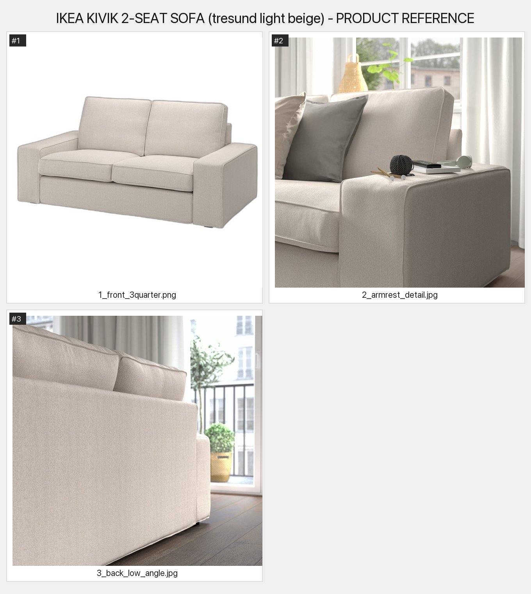

| 전략 | 모델 | pass@95 | 평균 제품점수 | 평균 구도재현 | 평균 회차 |
|---|---|---|---|---|---|
| R1 재생성 | Nano Banana Pro | 2/8 | 92 | 87 | 2.8 |
| R1 재생성 | GPT-Image | 2/8 | 94 | 85 | 2.8 |
| R2 덧그리기 | Nano Banana Pro | 1/8 | 91 | 87 | 2.8 |
| R2 덧그리기 | GPT-Image | 3/8 | 94 | 88 | 2.8 |
| R3 정합+시트 | Nano Banana Pro | 3/8 | 93 | 88 | 2.4 |
| R3 정합+시트 | GPT-Image | 3/8 | 94 | 98 | 2.6 |

| 한샘 구도 | Nano Banana Pro | GPT-Image |
|---|---|---|
 hanssem_A1 | 시도 1 · base · 생성 19s 인풋   → 아웃풋 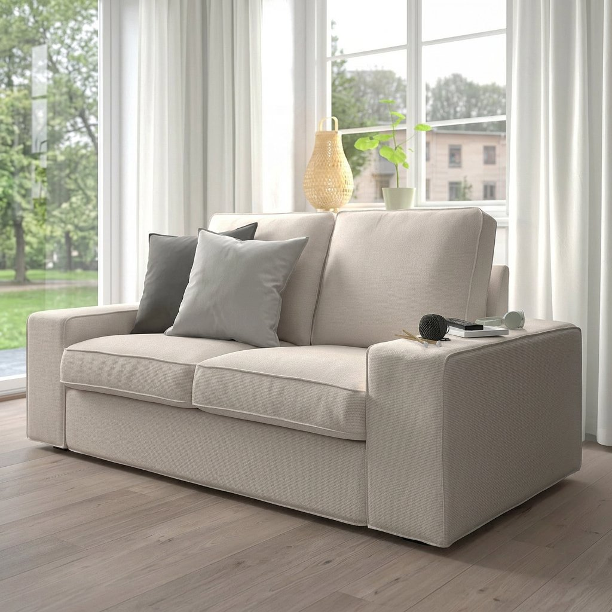 제품 A/92 · 구도 재현 10 QA 지적 5건
전체적으로 KIVIK 소파의 형태와 주요 디테일은 잘 재현되었으나, 등받이 쿠션의 두께와 높이, 좌방석의 평평함, 패브릭 컬러의 미묘한 차이 등에서 실제 제품과 차이가 있다. 패브릭 텍스처도 실제보다 약간 더 부드럽게 표현되었으나, 봉제선이나 엣지라인 등은 정상적으로 구현되어 있다. 명백한 장식 요소는 추가되지 않았다. 그러나 구도 재현도는 매우 낮아 composition_match 점수가 크게 감점되었다. 구도: 카메라 앵글과 프레이밍이 전혀 다르며, 구도 재현도가 매우 낮음. 시도 2 · base · 생성 15s 인풋 → 아웃풋 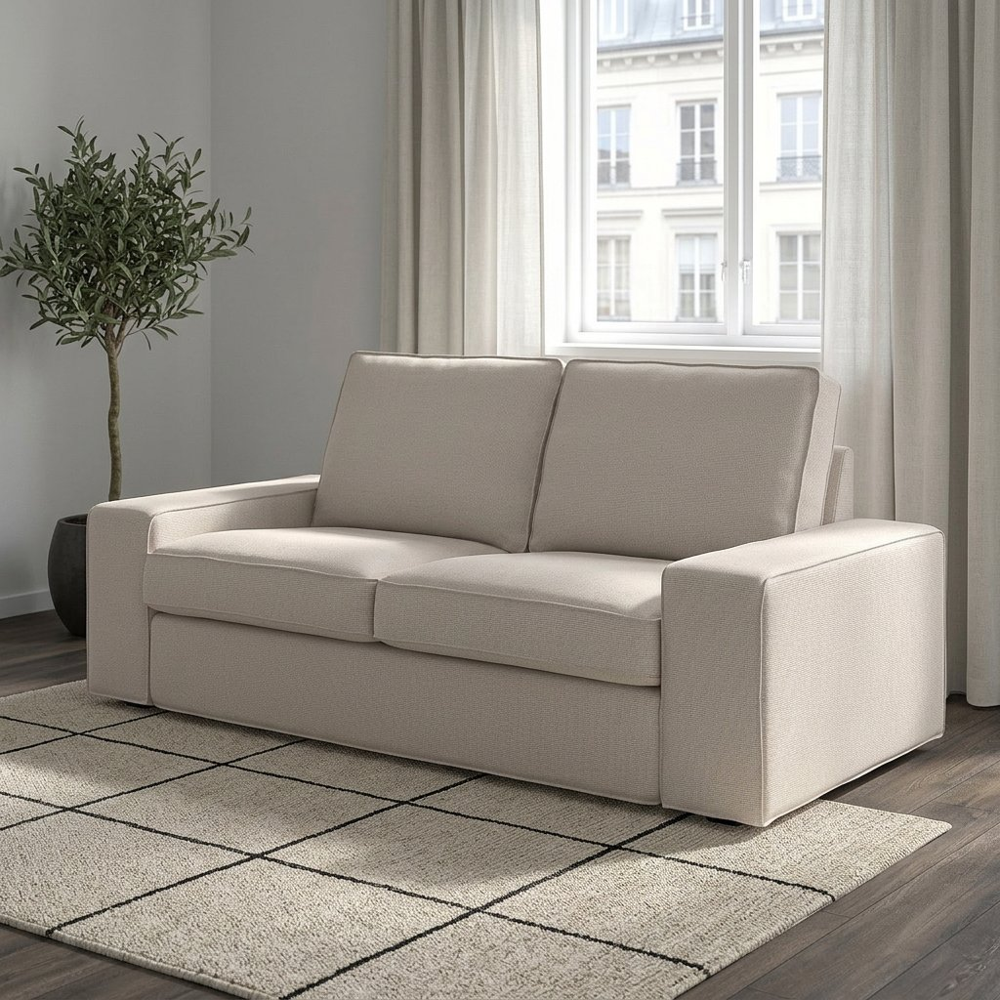 제품 S/95 ✓ · 구도 재현 10 QA 지적 3건
전체적으로 IKEA KIVIK 2인용 소파의 형태, 팔걸이, 쿠션, 패브릭 컬러와 질감이 매우 충실하게 재현되었으며, 명백한 장식 요소는 추가되지 않았음. 다만 실루엣과 쿠션의 미세한 비율 차이가 있으나, 이는 사진 노이즈 수준의 사소한 차이에 해당함. 구도: 구도와 카메라 앵글이 전혀 다르며, 프레이밍과 소파 배치도 일치하지 않음. 최종 S/95점 · 2회 · 65s · 통과 | 시도 1 · base · 생성 60s 인풋 → 아웃풋 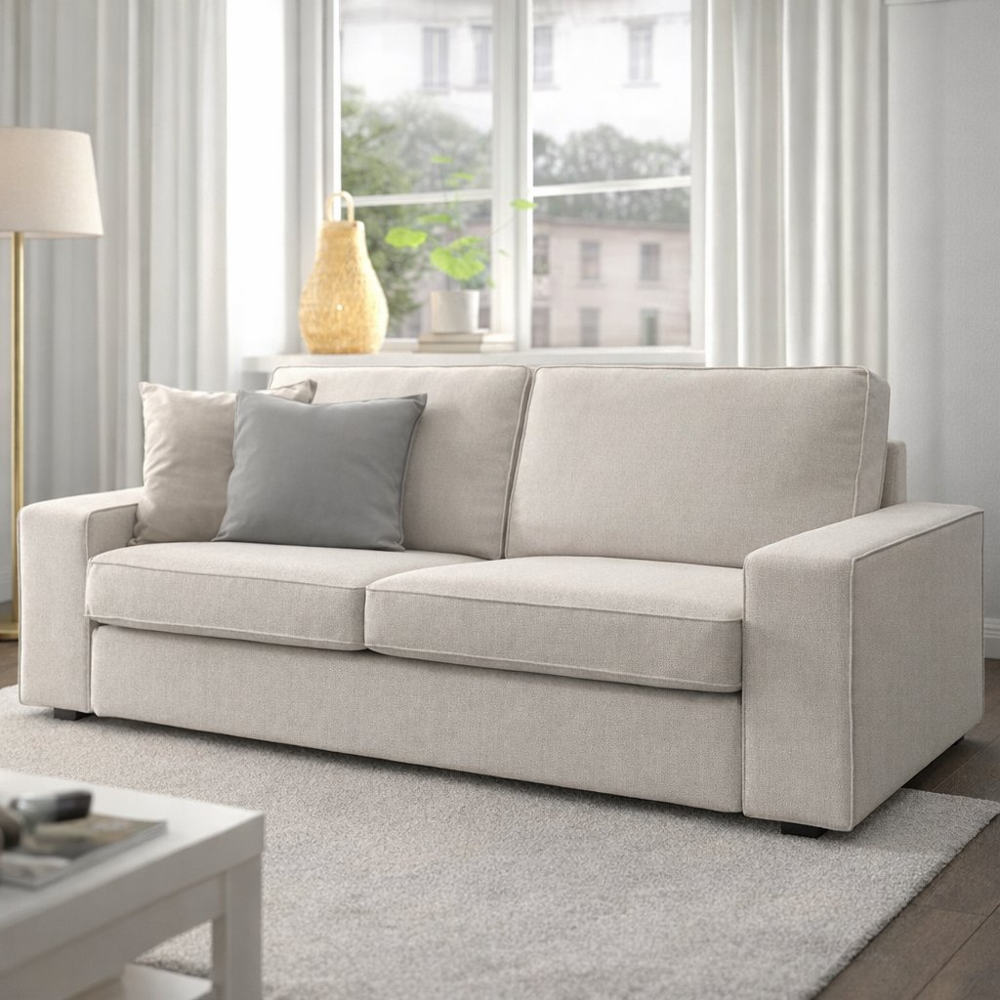 제품 A/94 · 구도 재현 20 QA 지적 6건
전체적으로 IKEA KIVIK 2인용 소파의 형태, 팔걸이, 쿠션, 패브릭 컬러와 텍스처가 매우 유사하게 재현되었으나, 소파의 비율이 약간 더 넓고 낮아 보이고, 쿠션의 모서리 라인이 실제보다 부드럽게 표현되어 미세한 차이가 존재합니다. 명백한 장식 요소는 없으며, 봉제선과 엣지 라인은 정상적으로 구현되었습니다. 그러나 구도 재현도는 매우 낮아, 제품만 평가 시 높은 점수이나 최상위 등급(S)에는 미치지 못합니다. 구도: 구도는 정면 평면샷(IMAGE C)과 달리 3/4 각도의 생활 연출샷으로 재현되지 않음. 시도 2 · base · 생성 49s 인풋 → 아웃풋 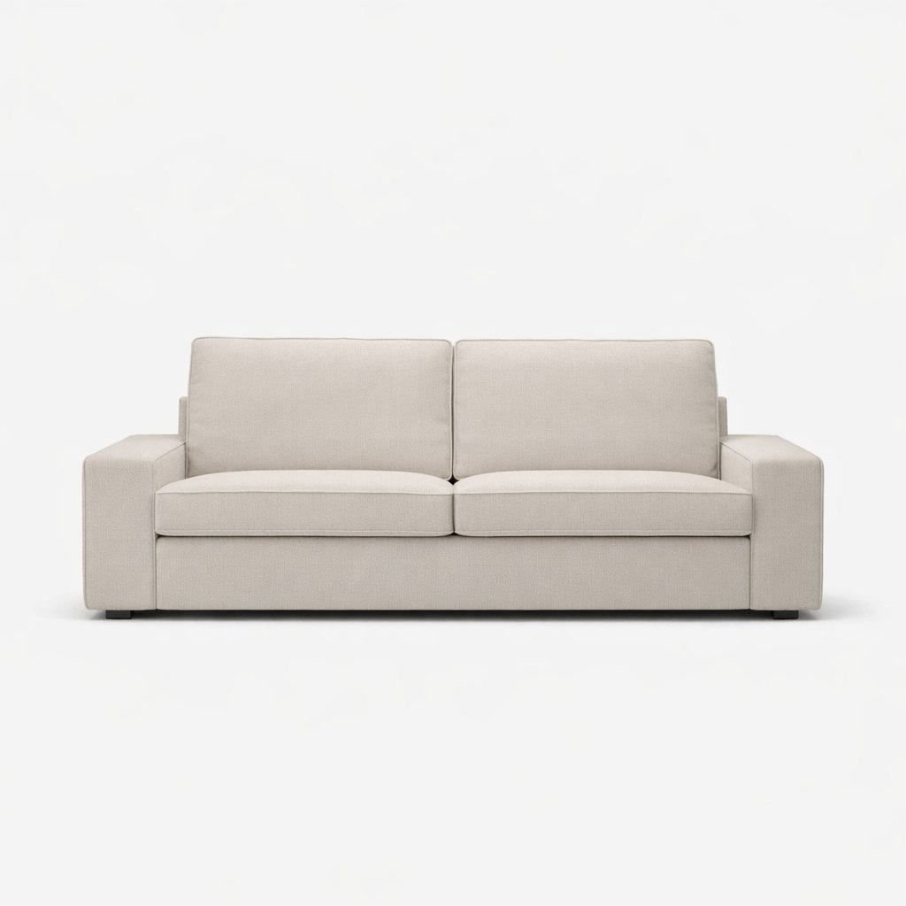 제품 A/93 · 구도 재현 10 QA 지적 4건
전체적으로 IKEA KIVIK 2인용 소파의 형태와 소재, 색상은 잘 재현되었으나, 쿠션의 두께와 각, 팔걸이의 비율 등에서 미세한 차이가 존재합니다. 봉제선이나 엣지라인은 정상 구조로 감점 사유가 아니며, 명백한 장식 요소도 추가되지 않았습니다. 그러나 소파의 실루엣과 쿠션 디테일에서 레퍼런스와의 차이가 분명히 보여 95점 이상을 주기 어렵습니다. 구도: 구도와 앵글이 완전히 다르며, 프레이밍과 소파 배치가 일치하지 않음. 시도 3 · base · 생성 55s 인풋 → 아웃풋 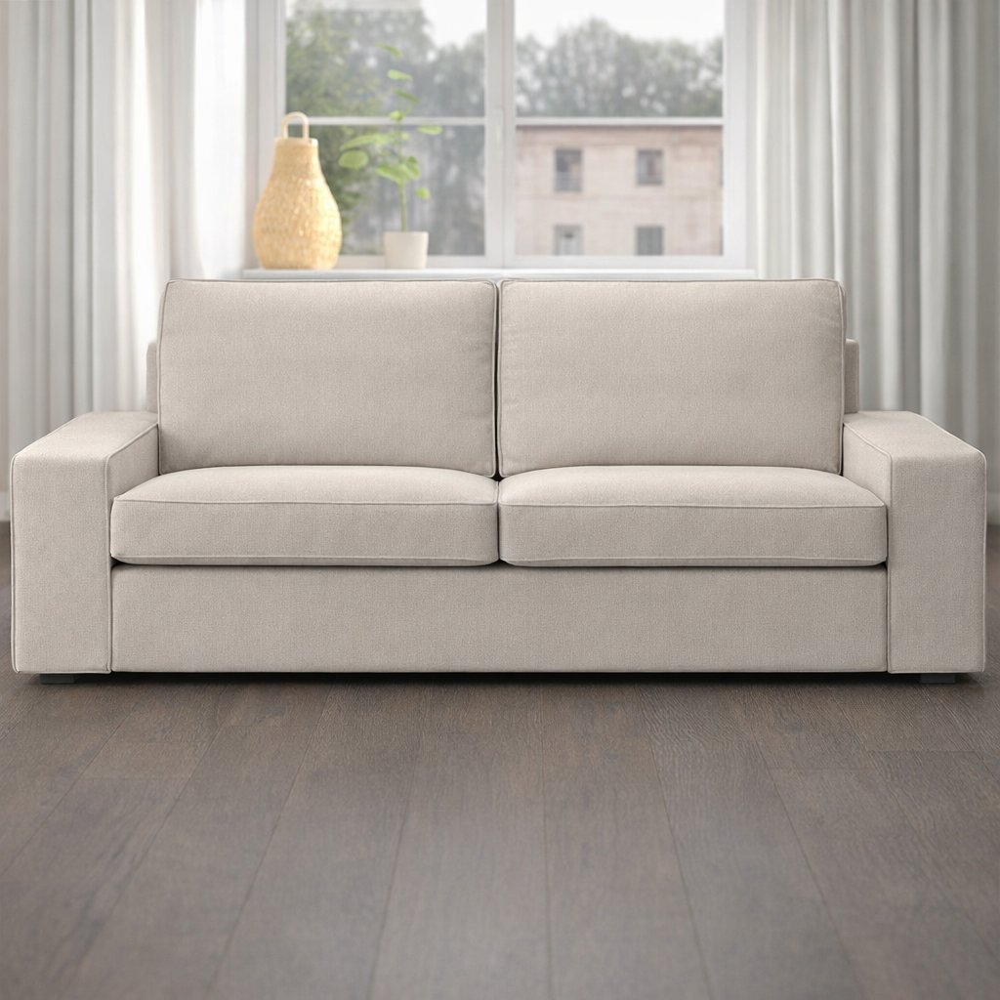 제품 S/96 ✓ · 구도 재현 10 QA 지적 3건
IMAGE B의 소파는 전체적으로 IKEA KIVIK 2인용 소파의 형태, 팔걸이, 쿠션 구성, 패브릭 컬러와 질감을 매우 충실하게 재현하였으며, 봉제선이나 엣지라인 등은 정상적인 구조로 장식적 요소가 추가되지 않았다. 다만 쿠션 두께와 각도에서 미세한 차이가 있으나, 이는 사진 노이즈 수준의 사소한 차이로 판단된다. 전반적으로 제품 원형 보존이 매우 우수하다. 구도: 구도와 카메라 앵글, 프레이밍이 전혀 다르며, 제품 배치와 연출도 일치하지 않음. 최종 S/96점 · 3회 · 212s · 통과 |
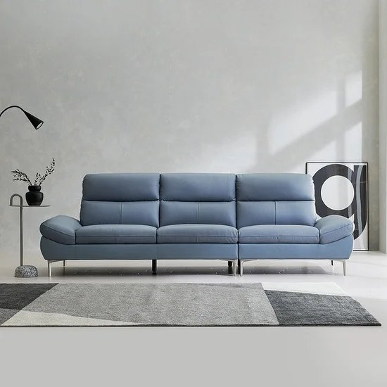 hanssem_A2 | 시도 1 · base · 생성 25s 인풋 → 아웃풋 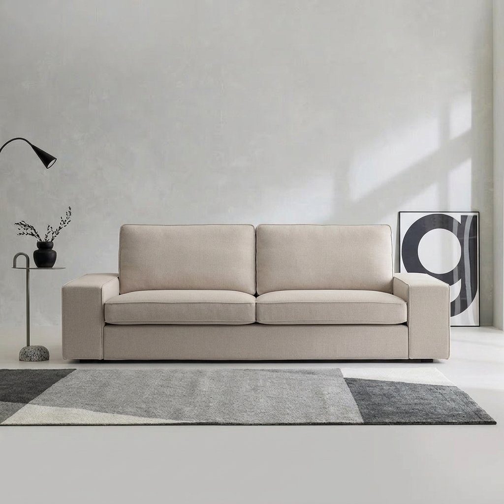 제품 A/93 · 구도 재현 99 QA 지적 6건
전체적으로 IKEA KIVIK 2인용 소파의 형태와 디테일을 잘 재현하였으나, 팔걸이 두께와 쿠션 비율, 패브릭 텍스처 등에서 미세한 차이가 존재합니다. 색상도 거의 유사하지만 약간의 색감 차이가 있습니다. 명백한 장식 요소는 없으며, 봉제선과 엣지라인은 정상적으로 표현되었습니다. 구도 재현도는 거의 완벽합니다. 구도: 카메라 앵글, 프레이밍, 소파 배치, 주변 소품 위치까지 거의 완벽하게 일치함. 시도 2 · base · 생성 18s 인풋 → 아웃풋 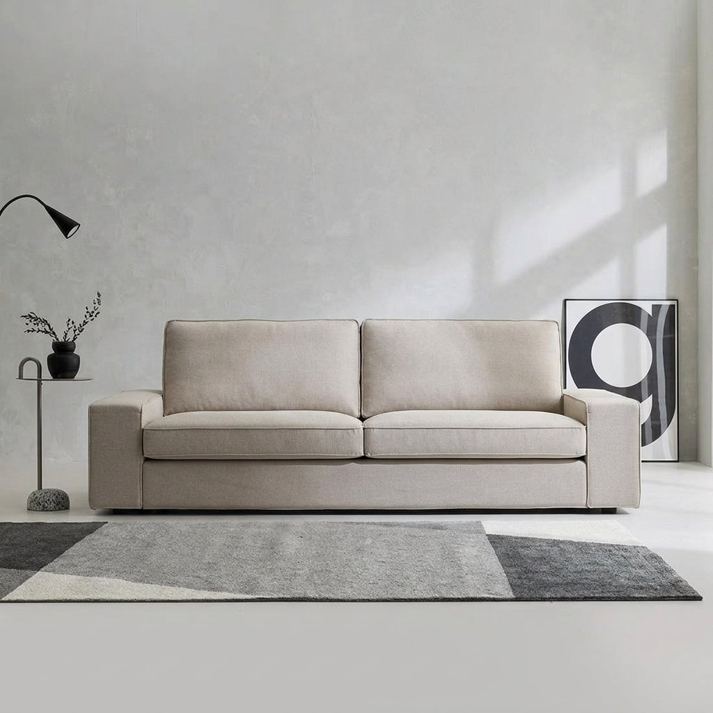 제품 A/90 · 구도 재현 99 QA 지적 5건
전체적으로 KIVIK 2인용 소파의 실루엣, 팔걸이, 쿠션 구성 등 주요 특징을 잘 재현하였으나, 등받이와 좌방석 쿠션의 두께 및 엣지 라인에서 약간의 형태 차이가 보입니다. 팔걸이의 각도와 패브릭 컬러, 텍스처도 미세하게 다르며, 이는 실제 제품과 비교했을 때 의미 있는 차이로 볼 수 있습니다. 하지만 명백한 장식 요소는 추가되지 않았으며, 전반적으로 높은 수준의 제품 충실도를 보입니다. 구도: 카메라 앵글, 프레이밍, 소파 배치, 소품 위치까지 거의 완벽하게 일치함. 시도 3 · base · 생성 18s 인풋 → 아웃풋 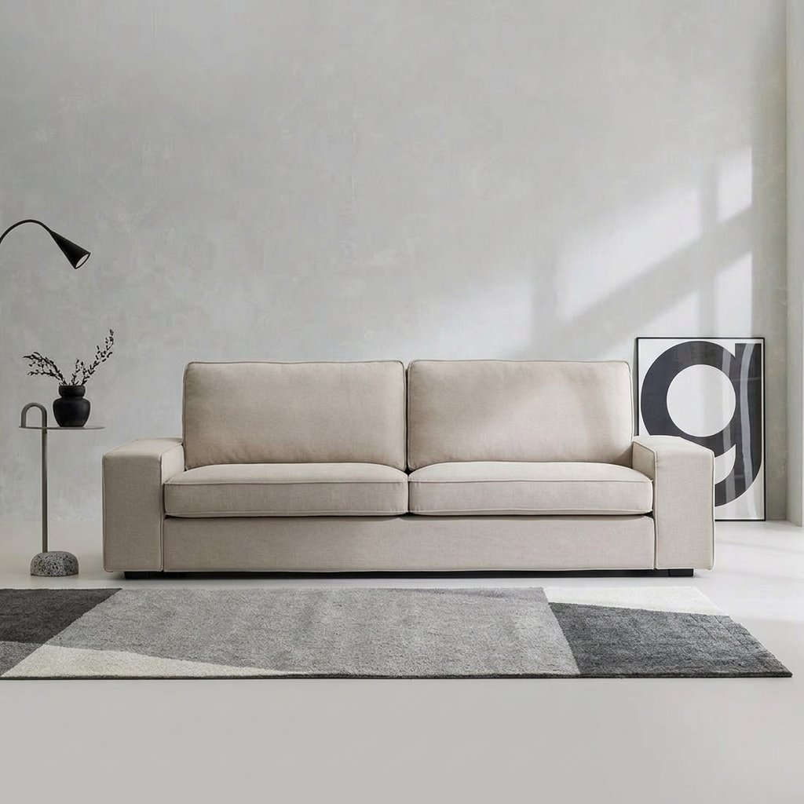 제품 B/78 · 구도 재현 98 QA 지적 6건
B의 소파는 전체적인 실루엣과 비율, 팔걸이 형태, 쿠션의 크기와 모양 등에서 KIVIK과 의미 있는 차이가 있습니다. 특히 소파가 더 길고 3인용처럼 보이며, 팔걸이와 쿠션이 더 각지고 평평하게 표현되어 KIVIK 특유의 둥글고 부드러운 인상이 부족합니다. 패브릭 컬러와 텍스처도 유사하지만 미세하게 차이가 있습니다. 명백한 장식 요소는 없으나, 형태적 차이로 인해 점수가 낮아졌습니다. 구도 재현도는 매우 우수합니다. 구도: 카메라 앵글, 프레이밍, 소품 배치, 전체 연출이 거의 동일하게 재현됨. 최종 A/93점 · 3회 · 116s · 임계 미달 | 시도 1 · base · 생성 59s 인풋 → 아웃풋 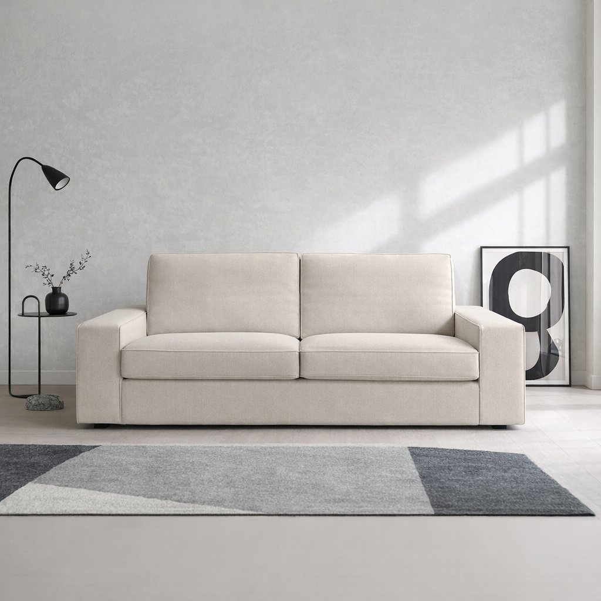 제품 A/90 · 구도 재현 98 QA 지적 5건
전체적으로 IKEA KIVIK 2인용 소파의 형태와 디테일을 잘 재현하였으나, 팔걸이의 두께와 각진 정도, 쿠션의 두께, 패브릭 텍스처 등에서 미세한 차이가 존재합니다. 색상도 거의 유사하지만 약간 더 밝은 느낌이 있습니다. 명백한 장식 요소는 추가되지 않았으며, 봉제선과 엣지 라인은 정상적으로 표현되었습니다. 구도는 거의 완벽하게 일치하나, 제품 자체의 미묘한 차이로 인해 95점 이상에는 미치지 못합니다. 구도: 카메라 앵글, 프레이밍, 소품 배치, 러그 위치 등 거의 완벽하게 재현됨. 시도 2 · base · 생성 50s 인풋 → 아웃풋 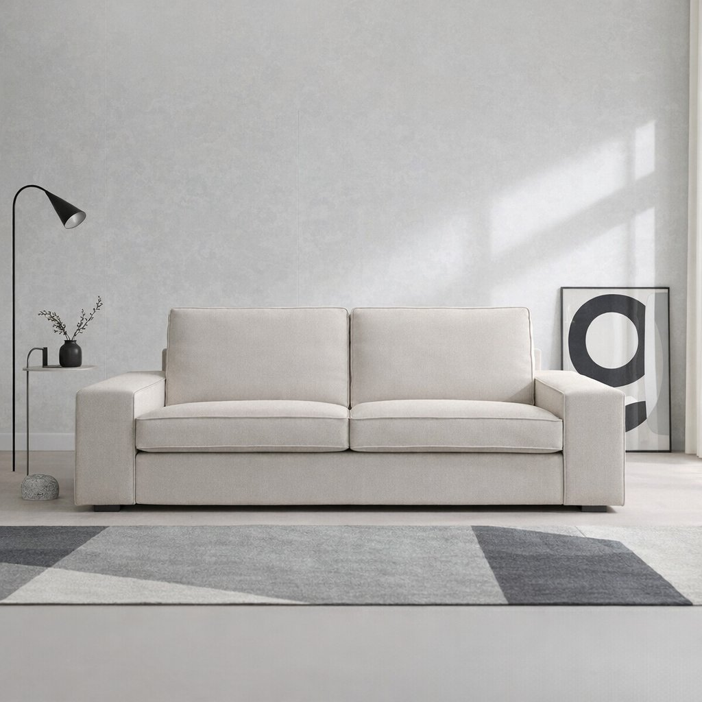 제품 A/92 · 구도 재현 98 QA 지적 5건
생성 결과(B)는 전체적으로 IKEA KIVIK 2인용 소파의 형태와 디테일을 잘 재현하였으나, 팔걸이의 두께와 높이, 쿠션의 두께, 패브릭 텍스처 등에서 미세한 차이가 존재합니다. 색상도 거의 유사하지만 약간 더 밝은 느낌이 있습니다. 명백한 장식 요소는 추가되지 않았으며, 봉제선과 엣지라인은 정상적으로 표현되었습니다. 전반적으로 매우 높은 충실도를 보이나, 형태와 디테일에서 의미 있는 미세 차이가 있어 S등급에는 미치지 못합니다. 구도: 카메라 앵글, 프레이밍, 소파 배치, 주변 소품 위치까지 거의 완벽하게 재현됨. 시도 3 · base · 생성 61s 인풋 → 아웃풋 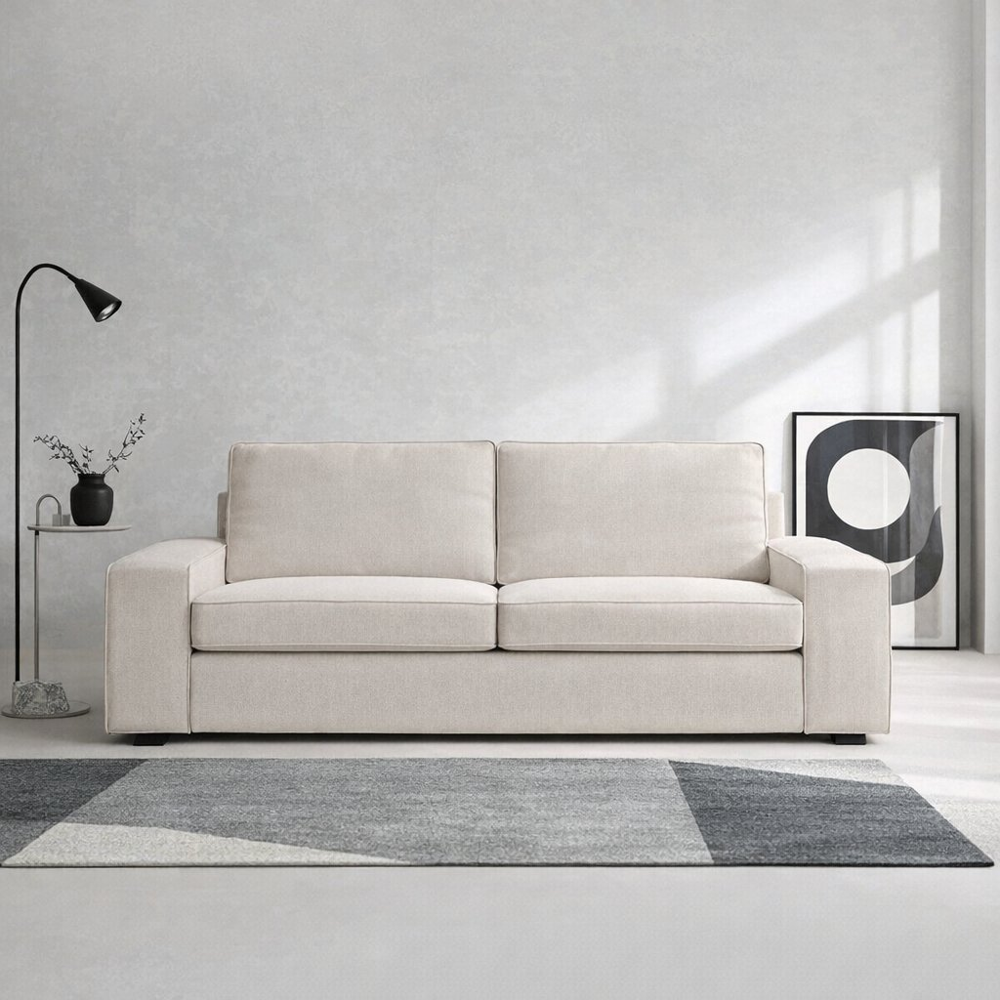 제품 A/92 · 구도 재현 99 QA 지적 5건
전체적으로 IKEA KIVIK 2인용 소파의 형태와 디테일을 매우 충실하게 재현하였으나, 소파의 실루엣이 실제 제품보다 약간 더 낮고 넓게 표현되었고, 쿠션의 볼륨감과 패브릭 텍스처가 실제보다 덜 입체적으로 보임. 색상도 거의 유사하나 미세하게 밝고 차가운 톤 차이가 있음. 명백한 장식 요소는 추가되지 않았으며, 봉제선과 엣지라인은 정상적으로 구현됨. 구도는 거의 완벽하게 일치하나, 제품 재현도에서 소폭 차이가 있어 95점 미만으로 평가함. 구도: 카메라 앵글, 프레이밍, 소파 배치, 소품 위치까지 거의 완벽하게 재현됨. 최종 A/92점 · 3회 · 227s · 임계 미달 |
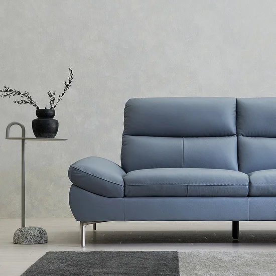 hanssem_B1 | 시도 1 · base · 생성 36s 인풋 → 아웃풋 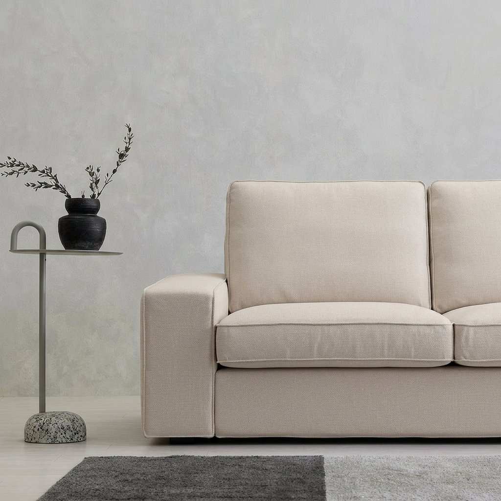 제품 A/89 · 구도 재현 98 QA 지적 6건
전체적으로 KIVIK 2인용 소파의 특징을 잘 재현하였으나, 실루엣이 약간 더 낮고 넓으며, 팔걸이와 쿠션의 각진 정도, 패브릭 컬러와 텍스처에서 미세한 차이가 존재합니다. 봉제선이나 엣지라인은 정상 구조로 감점 사유가 아니며, 명백한 장식 요소는 추가되지 않았습니다. 구도 재현도는 매우 높으나, 제품의 형태와 디테일에서 의미 있는 차이가 있어 95점 미만으로 평가합니다. 구도: 카메라 앵글, 프레이밍, 소파 배치, 주변 소품 위치까지 거의 완벽하게 일치함. 시도 2 · base · 생성 34s 인풋 → 아웃풋 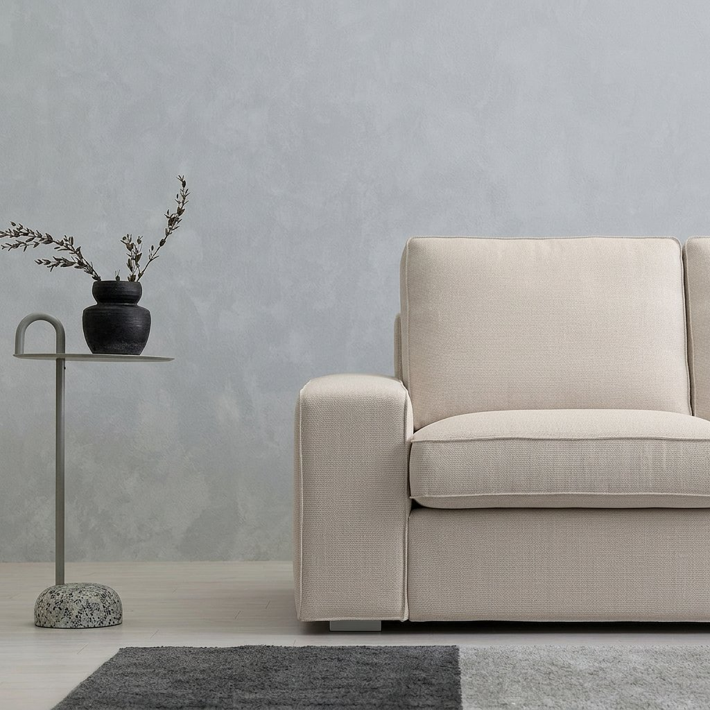 제품 A/91 · 구도 재현 99 QA 지적 5건
전체적으로 KIVIK 2인용 소파의 형태와 디테일을 잘 재현하였으나, 실루엣과 팔걸이의 각진 정도, 쿠션의 엣지 라인, 패브릭 컬러와 텍스처에서 미세한 차이가 존재합니다. 명백한 장식 요소는 없으며, 봉제선과 엣지 라인은 정상 구조로 판단됩니다. 구도 재현도는 매우 높으나, 제품 자체의 미묘한 차이로 인해 S 등급에는 미치지 못합니다. 구도: 카메라 앵글, 프레이밍, 소파 배치, 주변 소품까지 거의 완벽하게 일치함. 시도 3 · base · 생성 23s 인풋 → 아웃풋 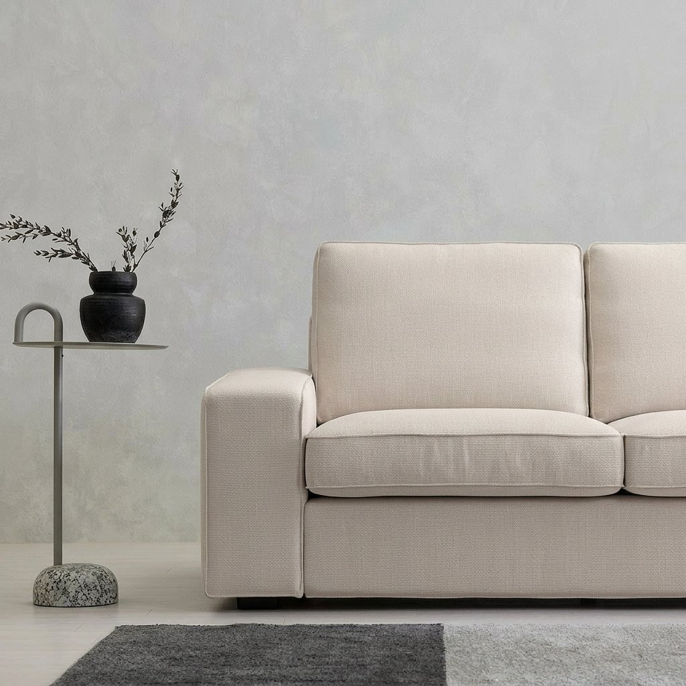 제품 A/88 · 구도 재현 98 QA 지적 5건
전체적으로 KIVIK 소파의 형태와 디테일을 잘 재현하였으나, 실루엣이 약간 더 낮고 넓으며, 팔걸이와 쿠션의 각진 정도, 패브릭 컬러와 텍스처에서 미세한 차이가 있습니다. 명백한 장식 요소는 없으며, 봉제선과 엣지라인은 정상적으로 표현되었습니다. 구도는 거의 완벽하게 일치하나, 제품의 형태와 소재에서 의미 있는 차이가 있어 95점 이상을 주기 어렵습니다. 구도: 카메라 앵글, 프레이밍, 소파 배치, 소품 위치가 거의 완벽하게 일치함. 최종 A/91점 · 3회 · 152s · 임계 미달 | 시도 1 · base · 생성 57s 인풋 → 아웃풋 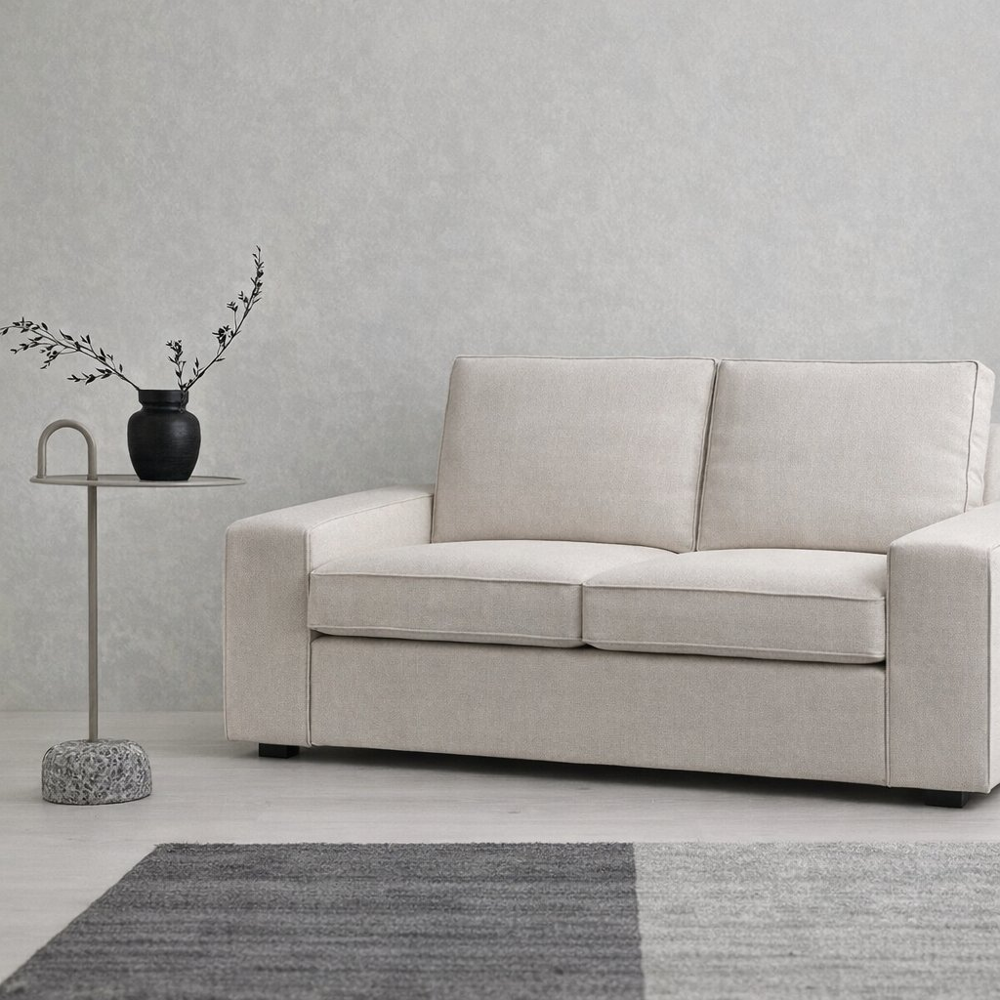 제품 A/91 · 구도 재현 98 QA 지적 4건
전체적으로 IKEA KIVIK 2인용 소파의 형태와 디테일을 잘 재현하였으나, 소파 다리의 형태와 색상, 팔걸이 두께, 쿠션 모서리 라인 등에서 미세한 차이가 존재합니다. 패브릭 컬러와 질감도 거의 유사하나, 실제 제품의 미세한 텍스처와는 약간의 차이가 있습니다. 명백한 장식 요소는 추가되지 않았으며, 봉제선과 엣지 라인은 정상적인 구조로 판단됩니다. 구도 재현도는 거의 완벽하나, 제품 충실도에서 소소한 차이로 인해 S 등급에는 미치지 못합니다. 구도: 카메라 앵글, 프레이밍, 소품 배치, 러그 위치 등 거의 완벽하게 일치함. 시도 2 · base · 생성 51s 인풋 → 아웃풋 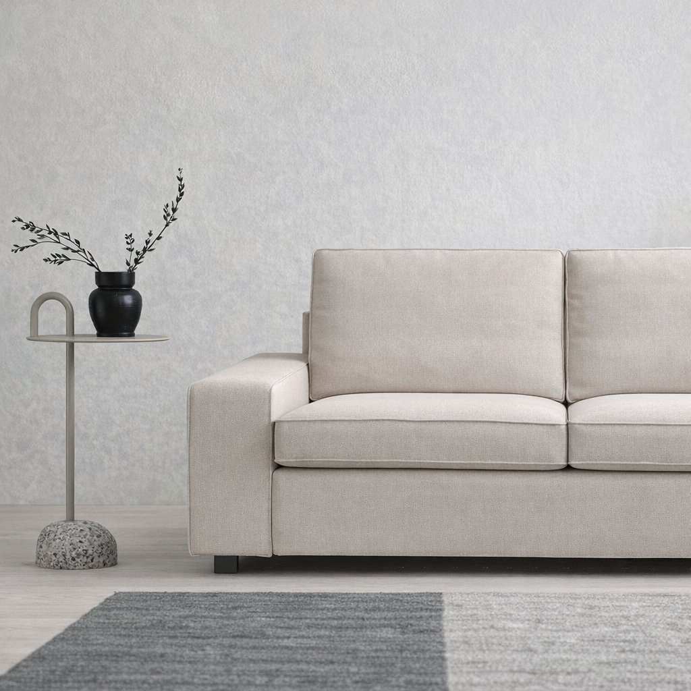 제품 A/92 · 구도 재현 98 QA 지적 5건
전체적으로 KIVIK 2인용 소파의 형태와 디테일을 매우 충실하게 재현하였으나, 등받이 쿠션의 두께와 좌방석 하단 엣지 라인에서 미세한 차이가 있음. 팔걸이와 쿠션의 구조, 봉제선 등은 정확하게 구현되었으며, 색상과 텍스처도 실제 제품과 유사하나 약간 더 밝고 매끈하게 표현됨. 명백한 장식 요소는 추가되지 않았음. 구도 재현도는 거의 완벽하나, 제품의 미세한 형태 차이로 인해 95점 이상에는 미치지 못함. 구도: 카메라 앵글, 프레이밍, 소파 배치, 소품 위치까지 거의 완벽하게 일치함. 시도 3 · base · 생성 50s 인풋 → 아웃풋 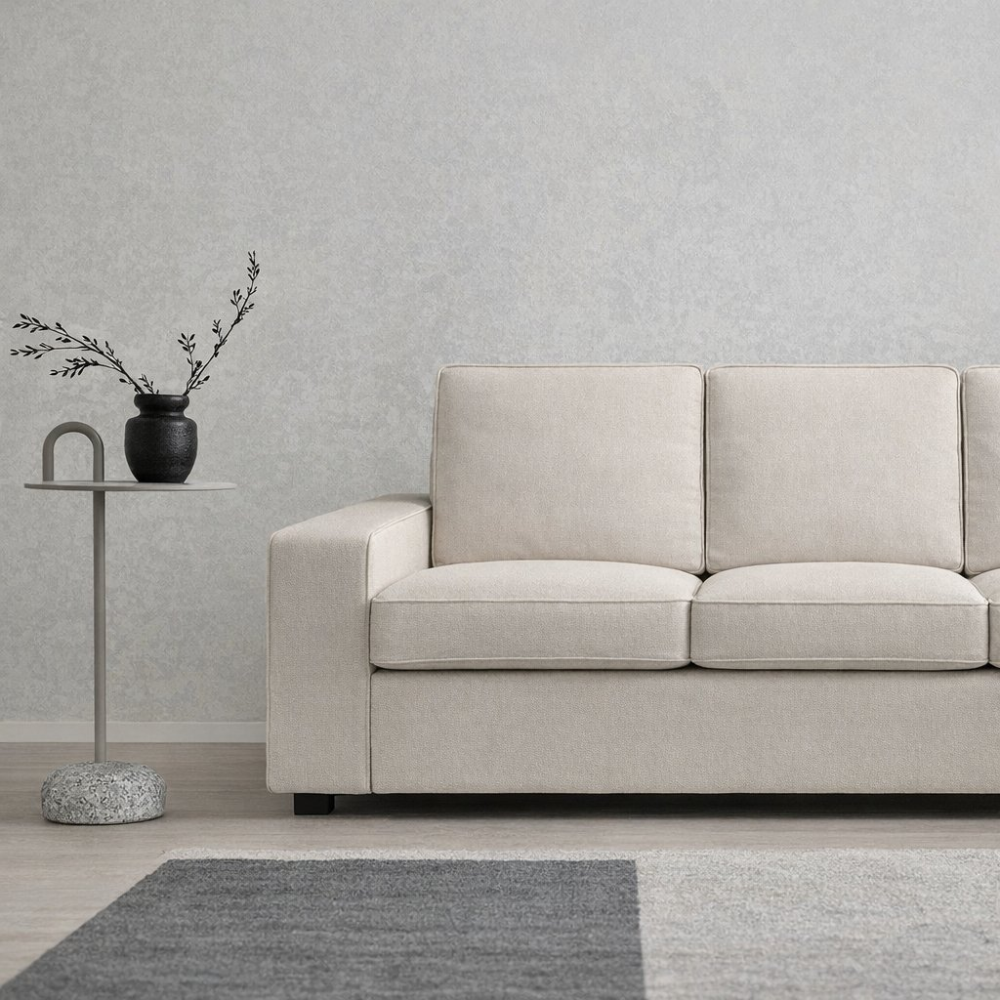 제품 A/91 · 구도 재현 98 QA 지적 5건
전체적으로 IKEA KIVIK 2인용 소파의 형태와 디테일을 잘 재현하였으나, 등받이 쿠션의 높이와 모서리 라인, 패브릭 텍스처 등에서 미세한 차이가 존재합니다. 색상도 거의 유사하지만 약간 더 밝은 느낌이 있습니다. 명백한 장식 요소는 추가되지 않았으며, 봉제선과 엣지라인은 정상적으로 표현되었습니다. 구도 재현도는 매우 높으나, 제품 자체의 미세한 차이로 인해 S 등급에는 미치지 못합니다. 구도: 카메라 앵글, 프레이밍, 소파 배치, 소품 위치까지 거의 완벽하게 재현됨. 최종 A/92점 · 3회 · 220s · 임계 미달 |
 hanssem_B2 | 시도 1 · base · 생성 18s 인풋 → 아웃풋 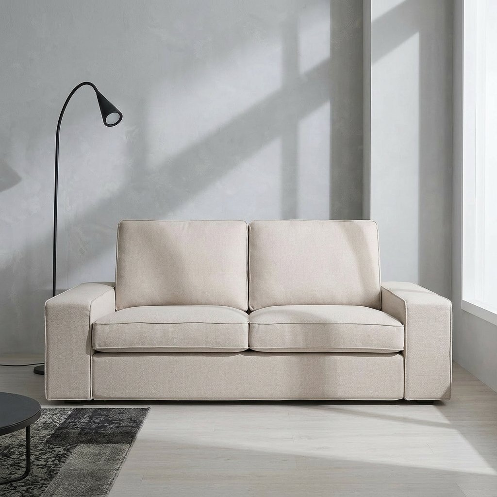 제품 A/94 · 구도 재현 98 QA 지적 5건
전체적으로 IKEA KIVIK 2인용 소파의 형태와 디테일을 매우 충실하게 재현하였으나, 등받이 쿠션의 두께와 좌방석 쿠션의 모서리 곡률 등에서 미세한 차이가 존재합니다. 팔걸이의 각진 형태와 비율은 거의 동일하나, 상단 모서리의 곡률이 약간 더 부드럽게 표현되었습니다. 패브릭 컬러와 텍스처도 실제 제품과 거의 유사하나, 생성 결과가 약간 더 밝고 매끈하게 보입니다. 명백한 장식 요소는 추가되지 않았으며, 봉제선과 엣지라인은 정상적인 구조로 판단됩니다. 구도 재현도는 매우 높아 거의 동일한 연출을 보여줍니다. 구도: 카메라 앵글, 프레이밍, 소파 배치, 연출이 거의 완벽하게 일치함. 시도 2 · base · 생성 20s 인풋 → 아웃풋 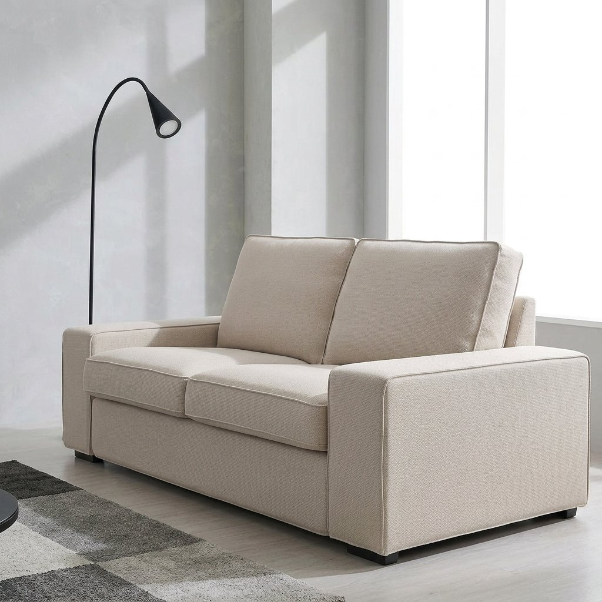 제품 A/93 · 구도 재현 98 QA 지적 5건
전체적으로 IKEA KIVIK 2인용 소파의 형태와 디테일을 매우 충실하게 재현하였으나, 등받이 쿠션과 좌방석의 두께감, 팔걸이 앞쪽 모서리의 미세한 곡선 등에서 약간의 차이가 존재합니다. 패브릭 컬러와 텍스처도 거의 유사하지만, 생성 이미지가 약간 더 밝고 부드럽게 표현되었습니다. 명백한 장식 요소는 추가되지 않았으며, 봉제선과 엣지 라인은 정상적인 구조로 판단됩니다. 구도 재현도는 매우 높으나, 제품의 미세한 형태 차이로 인해 95점 미만으로 평가하였습니다. 구도: 카메라 앵글, 프레이밍, 소파 배치, 연출이 거의 완벽하게 일치함. 시도 3 · base · 생성 16s 인풋 → 아웃풋 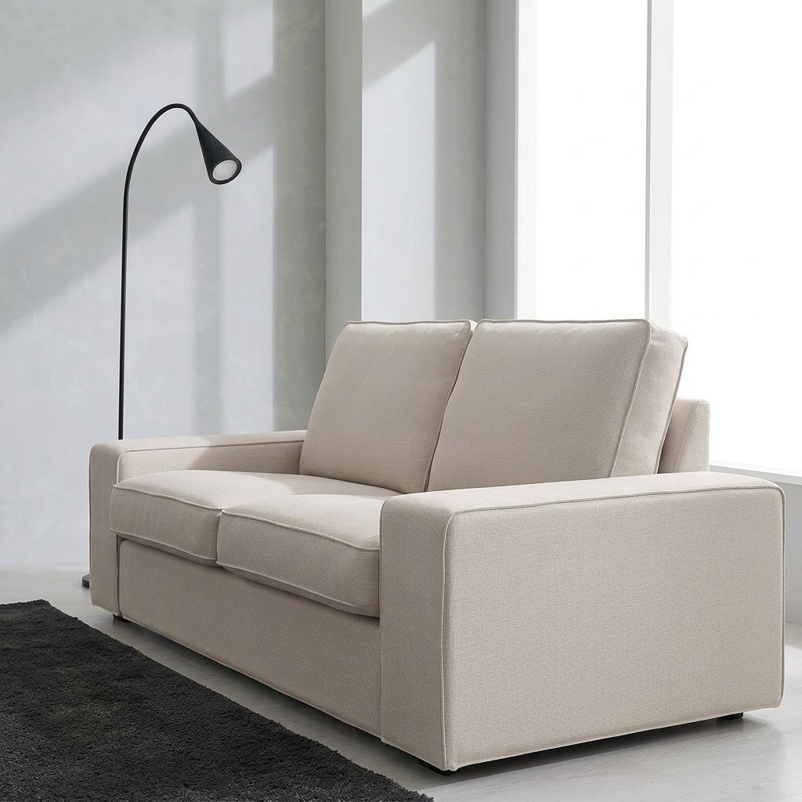 제품 A/92 · 구도 재현 98 QA 지적 5건
전체적으로 IKEA KIVIK 2인용 소파의 형태와 디테일을 잘 재현하였으나, 팔걸이의 두께와 각진 느낌, 쿠션의 두께 및 라인에서 약간의 차이가 있습니다. 패브릭 컬러와 텍스처도 거의 유사하나, 조명과 질감 표현에서 미세한 차이가 존재합니다. 명백한 장식 요소는 추가되지 않았으며, 봉제선과 엣지라인은 정상적으로 구현되었습니다. 구도 재현도는 매우 높으나, 제품의 세부 디테일 차이로 인해 95점 미만으로 평가되었습니다. 구도: 카메라 앵글, 프레이밍, 소파 배치, 연출이 거의 동일하게 재현됨. 최종 A/94점 · 3회 · 119s · 임계 미달 | 시도 1 · base · 생성 51s 인풋 → 아웃풋 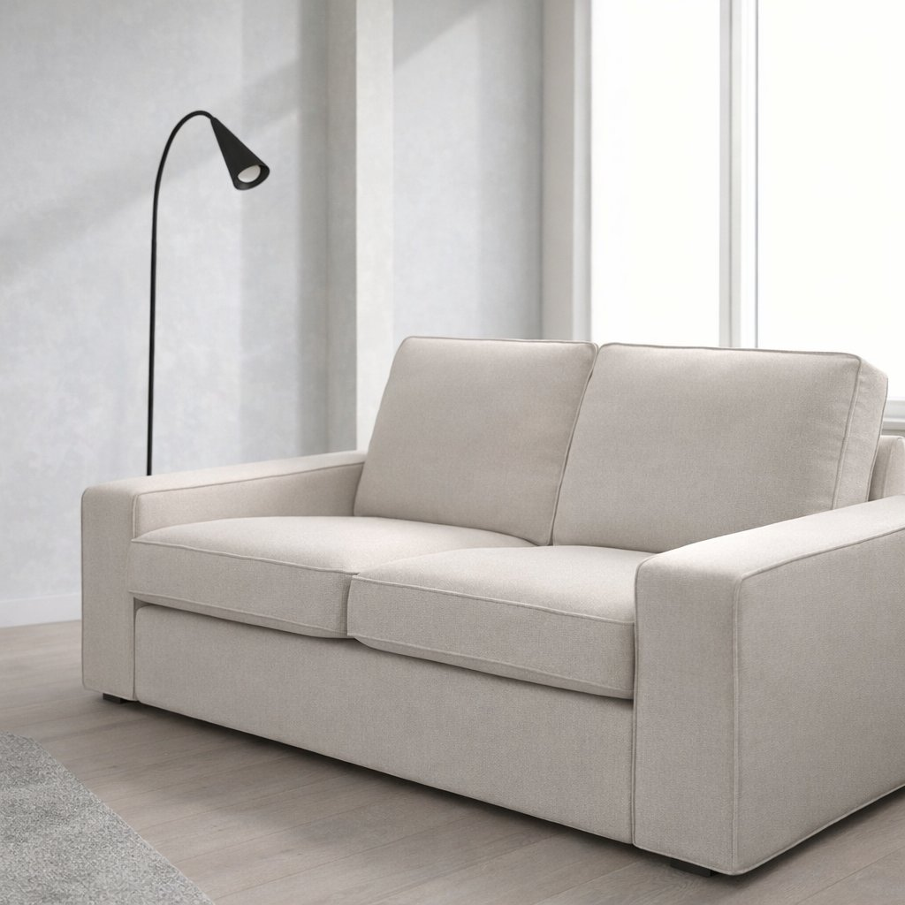 제품 A/94 · 구도 재현 98 QA 지적 5건
전체적으로 KIVIK 2인용 소파의 형태와 디테일을 매우 충실하게 재현하였으나, 팔걸이 두께와 쿠션 모서리의 둥근 정도, 봉제선 위치 등에서 미세한 차이가 존재합니다. 패브릭 컬러와 텍스처도 실제 제품과 거의 유사하나, 약간의 밝기와 질감 차이가 있습니다. 명백한 장식 요소는 추가되지 않았으며, 봉제선과 엣지라인은 정상적인 구조로 판단됩니다. 구도 재현도는 매우 높으나, 제품 재현에서 소폭의 차이로 95점 미만이므로 'retry' 판정입니다. 구도: 카메라 앵글, 프레이밍, 소파 배치가 거의 완벽하게 일치함. 시도 2 · base · 생성 50s 인풋 → 아웃풋 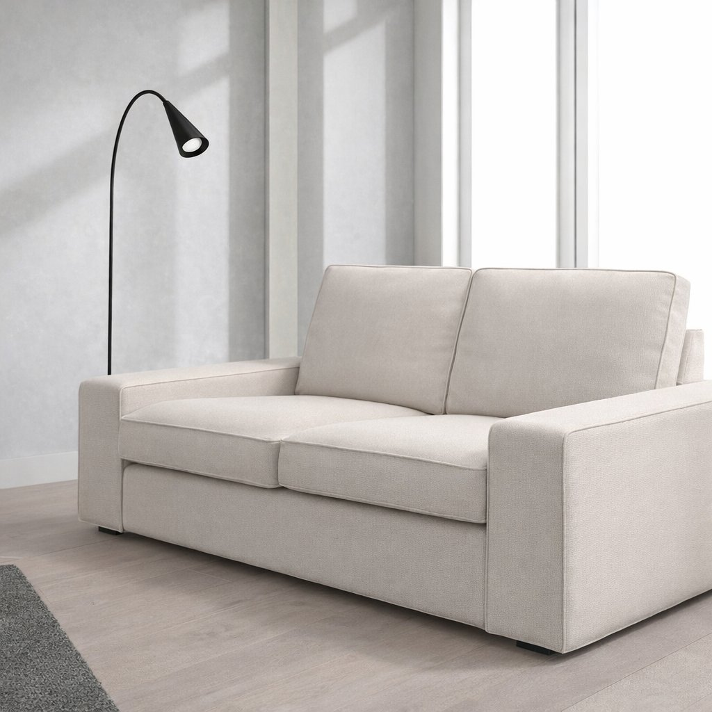 제품 A/93 · 구도 재현 98 QA 지적 5건
생성 결과의 소파는 전체적으로 IKEA KIVIK 2인용 소파의 형태와 디테일을 매우 잘 재현하였으나, 팔걸이 두께와 쿠션의 앞면 곡선, 패브릭의 미세한 색상 및 질감 차이가 존재합니다. 봉제선이나 엣지라인 등은 정상 구조로 간주되어 감점 사유가 아니며, 명백한 장식 요소는 추가되지 않았습니다. 구도 재현도는 거의 완벽하나, 제품 자체의 미세한 형태 및 질감 차이로 인해 95점 미만으로 평가되었습니다. 구도: 카메라 앵글, 프레이밍, 소파 배치, 소품 위치까지 거의 완벽하게 재현됨. 시도 3 · base · 생성 50s 인풋 → 아웃풋 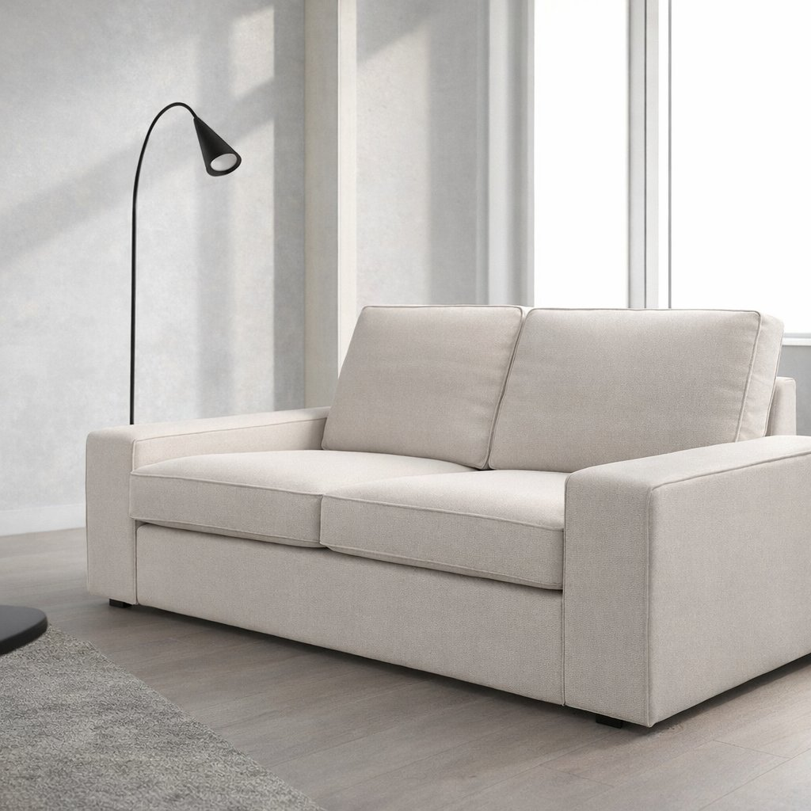 제품 A/93 · 구도 재현 98 QA 지적 4건
생성 결과(B)는 전체적으로 IKEA KIVIK 2인용 소파의 형태와 디테일을 매우 충실하게 재현하였으나, 팔걸이 두께와 쿠션의 각진 정도, 패브릭 컬러의 미세한 차이, 텍스처의 부드러움 등에서 약간의 차이가 존재합니다. 명백한 장식 요소는 추가되지 않았으며, 봉제선과 엣지라인은 정상적으로 표현되었습니다. 구도 재현도는 거의 완벽하나, 제품 자체의 미세한 차이로 인해 95점 미만으로 평가하였습니다. 구도: 카메라 앵글, 프레이밍, 소파 배치, 주변 소품까지 거의 완벽하게 재현됨. 최종 A/94점 · 3회 · 199s · 임계 미달 |
 hanssem_B3 | 시도 1 · base · 생성 22s 인풋 → 아웃풋 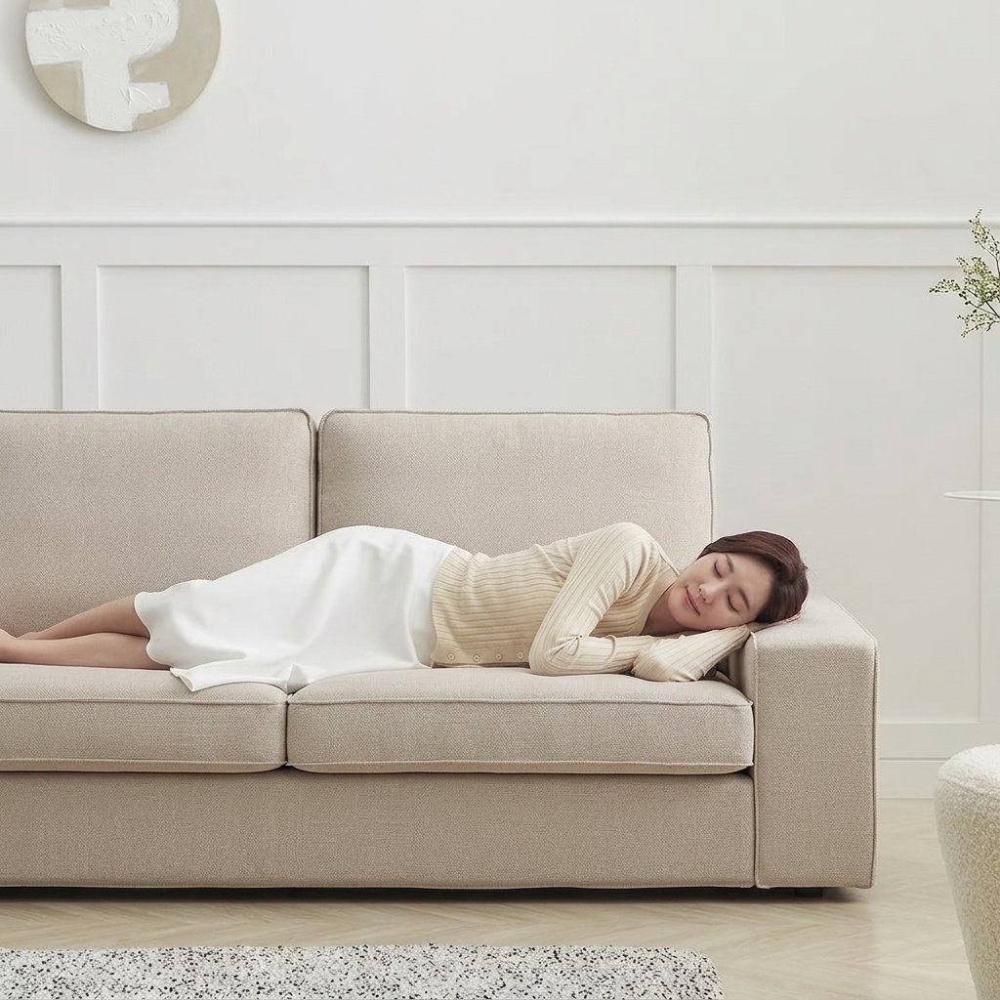 제품 A/93 · 구도 재현 97 QA 지적 6건
제품의 전체적인 실루엣과 팔걸이, 패브릭 컬러 및 텍스처는 KIVIK 소파와 매우 유사하게 재현되었으나, 등받이 쿠션의 두께와 비율에서 약간의 차이가 있습니다. 명백한 장식 요소는 없으며, 봉제선과 엣지라인은 정상적인 구조로 판단됩니다. 구도 재현도는 매우 높으나, 제품의 미세한 비율 차이로 인해 S 등급에는 미치지 못합니다. 구도: 카메라 앵글, 인물 위치, 프레이밍이 거의 동일하게 재현됨. 시도 2 · base · 생성 19s 인풋 → 아웃풋 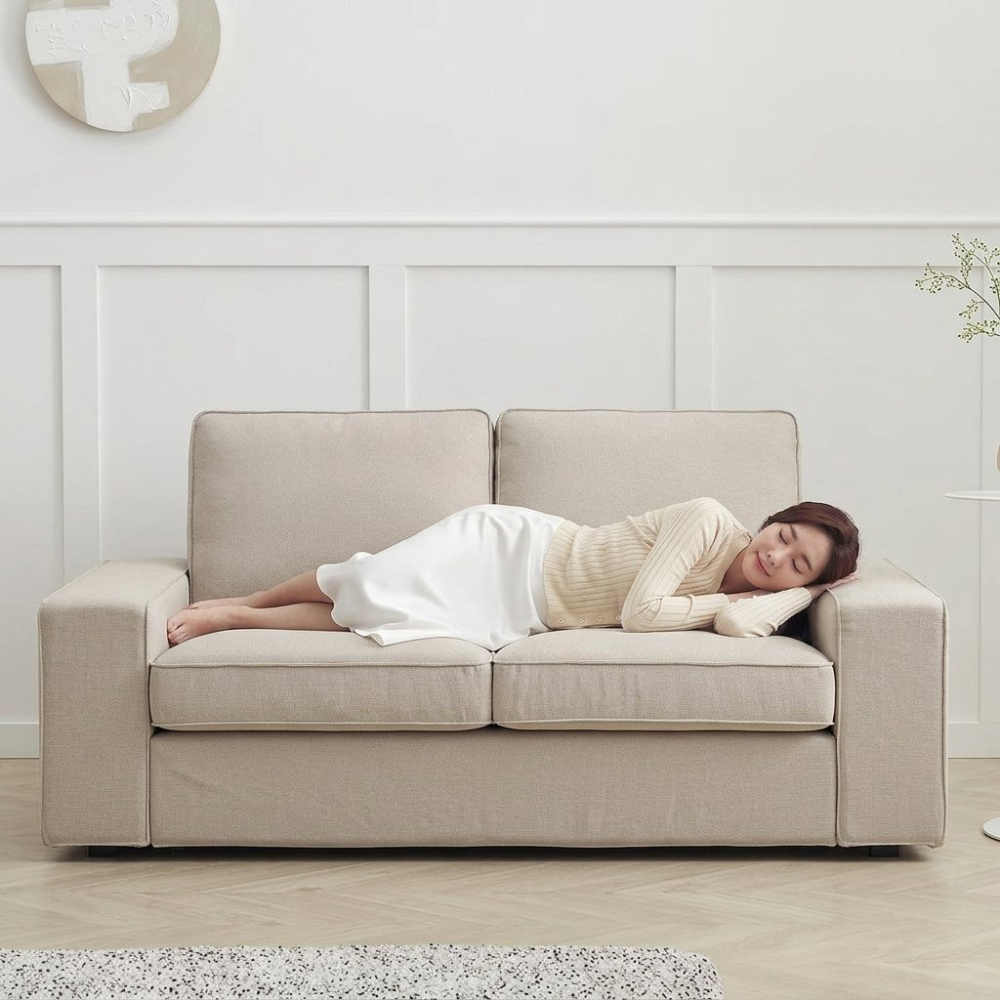 제품 A/88 · 구도 재현 97 QA 지적 5건
B의 소파는 전체적으로 KIVIK의 직선적이고 각진 실루엣, 두꺼운 팔걸이, 분리된 등받이와 좌방석 쿠션 등 주요 특징을 잘 재현하였으나, 쿠션의 각과 두께, 팔걸이의 각진 정도, 패브릭 컬러와 텍스처에서 미세한 차이가 존재합니다. 봉제선 등 구조적 요소는 정상적으로 표현되어 감점 사유가 아니며, 명백한 장식 요소도 추가되지 않았습니다. 구도는 거의 완벽하게 일치하나, 제품 자체의 디테일 차이로 인해 95점 미만으로 평가하였습니다. 구도: 카메라 앵글, 인물 위치, 소파 배치가 거의 동일하게 재현됨. 시도 3 · base · 생성 15s 인풋 → 아웃풋 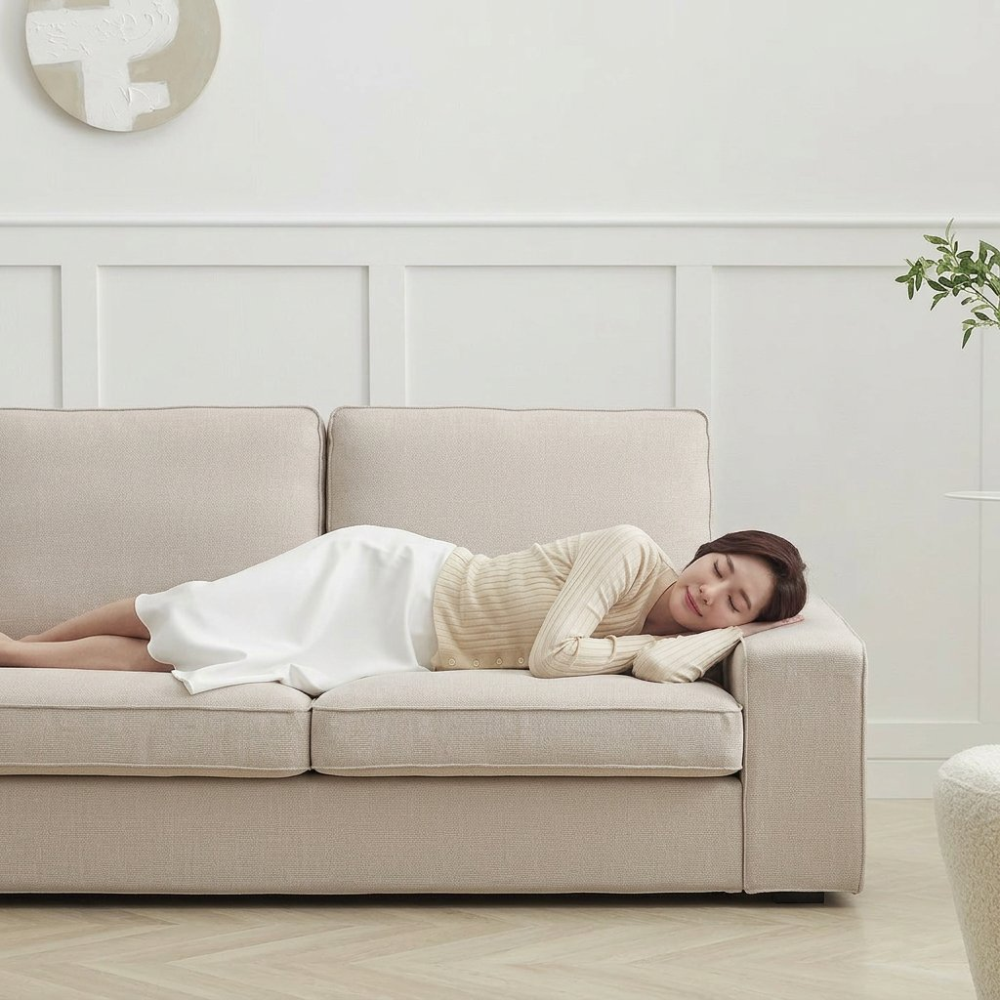 제품 A/91 · 구도 재현 97 QA 지적 5건
전체적으로 IKEA KIVIK 2인용 소파의 형태와 디테일을 잘 재현하였으나, 실루엣과 팔걸이 두께, 쿠션 모서리 마감 등에서 미세한 차이가 존재합니다. 패브릭 컬러와 텍스처도 약간의 차이가 있으나, 명백한 장식 요소는 추가되지 않았습니다. 구도는 거의 완벽하게 일치하나, 제품 자체의 세부 디테일 차이로 인해 95점 이상에는 미치지 못합니다. 구도: 카메라 앵글, 인물 위치, 프레이밍이 거의 동일하게 재현됨. 최종 A/93점 · 3회 · 112s · 임계 미달 | 시도 1 · base · 생성 54s 인풋 → 아웃풋 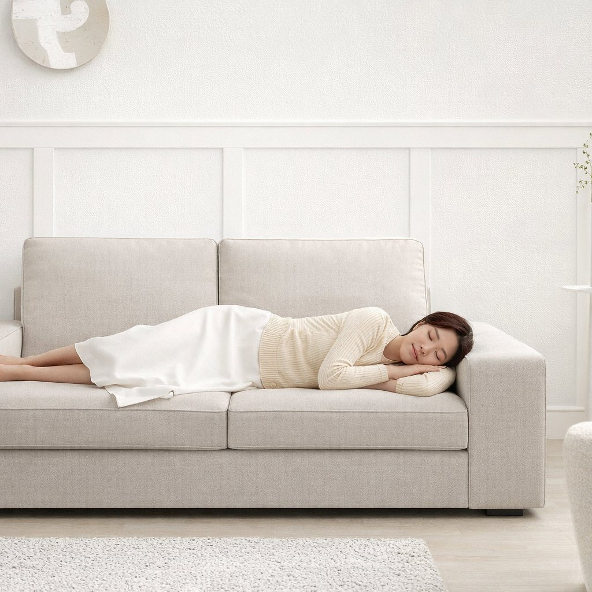 제품 S/95 ✓ · 구도 재현 97 QA 지적 6건
전체적으로 IKEA KIVIK 2인용 소파의 형태, 비율, 팔걸이, 쿠션 구조, 패브릭 컬러와 텍스처가 매우 충실하게 재현되었습니다. 소파의 실루엣과 주요 구조적 특징이 잘 보존되어 있으며, 명백한 장식 요소도 추가되지 않았습니다. 다만, 패브릭 텍스처와 쿠션의 미세한 두께감, 팔걸이의 각도 등에서 아주 약간의 차이가 있으나, 이는 사진 노이즈 수준의 미세한 차이로 판단됩니다. 구도 역시 거의 완벽하게 일치합니다. 구도: 카메라 앵글, 프레이밍, 벽 배경, 소파 배치가 거의 동일하게 재현됨. 최종 S/95점 · 1회 · 69s · 통과 |
 hanssem_B4 | 시도 1 · base · 생성 28s 인풋 → 아웃풋 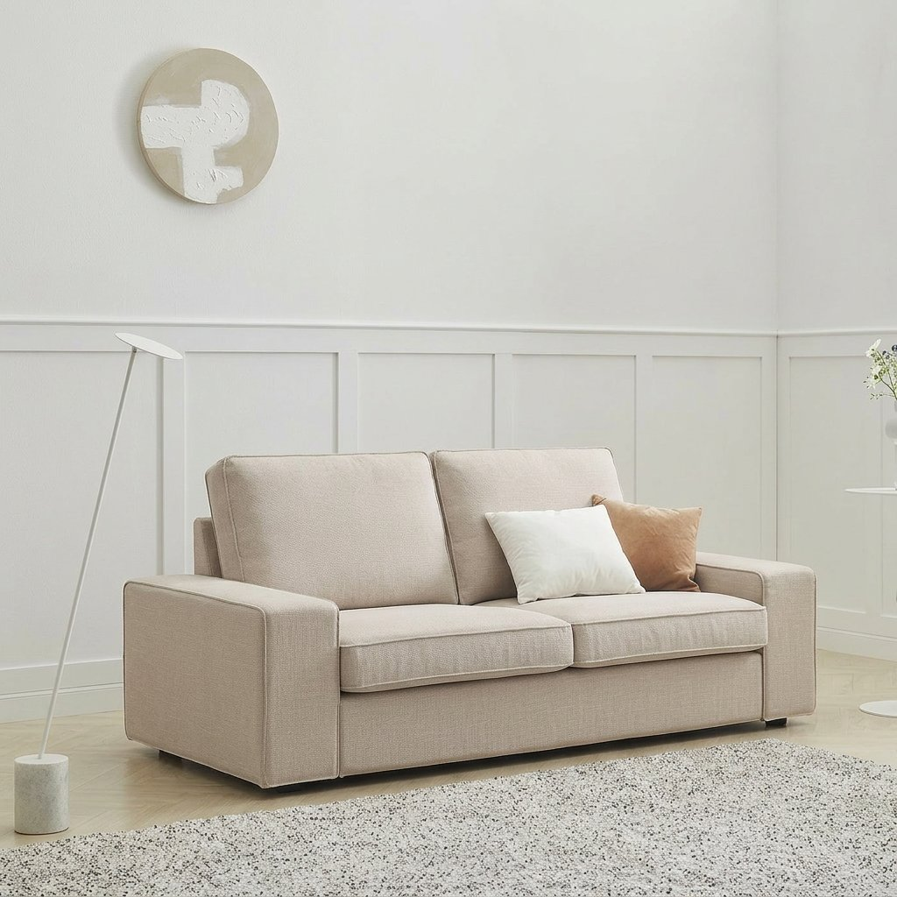 제품 A/94 · 구도 재현 99 QA 지적 5건
전체적으로 IKEA KIVIK 2인용 소파의 형태와 디테일을 매우 충실하게 재현하였으나, 실루엣이 약간 더 낮고 넓어 보이고, 쿠션 두께와 패브릭 컬러·텍스처에서 미세한 차이가 있습니다. 팔걸이와 쿠션의 구조, 봉제선 등은 정상적으로 구현되어 있으며, 명백한 장식 요소는 추가되지 않았습니다. 구도 재현도는 거의 완벽하나, 제품 자체의 미세한 차이로 인해 95점에 미치지 못해 'retry' 판정입니다. 구도: 카메라 앵글, 프레이밍, 소파 배치, 연출이 거의 완벽하게 일치함. 시도 2 · base · 생성 22s 인풋 → 아웃풋 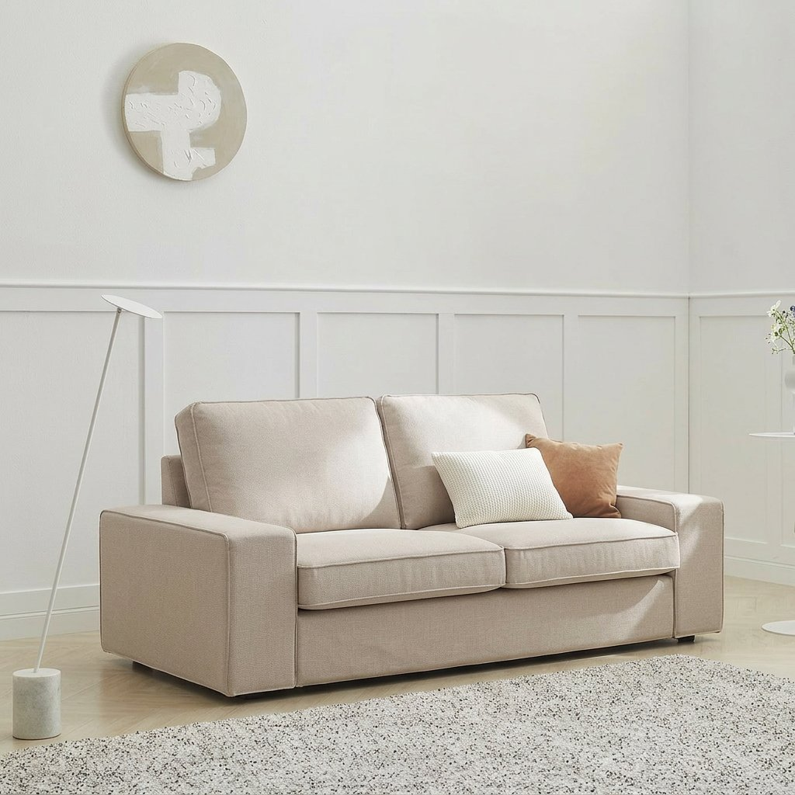 제품 S/95 ✓ · 구도 재현 98 QA 지적 5건
전체적으로 IKEA KIVIK 2인용 소파의 실루엣, 팔걸이, 쿠션 구조, 패브릭 컬러와 텍스처가 매우 충실하게 재현되었습니다. 봉제선과 엣지 라인은 정상적인 소파 구조로, 추가 장식이 없으며, 미세한 쿠션 두께와 엣지 라인 차이, 조명에 의한 색상 차이만 존재합니다. 구도 역시 거의 동일하게 재현되어 제품 충실도와 구도 재현도 모두 매우 우수합니다. 구도: 카메라 앵글, 프레이밍, 소파 배치, 연출이 거의 완벽하게 일치함. 최종 S/95점 · 2회 · 87s · 통과 | 시도 1 · base · 생성 61s 인풋 → 아웃풋 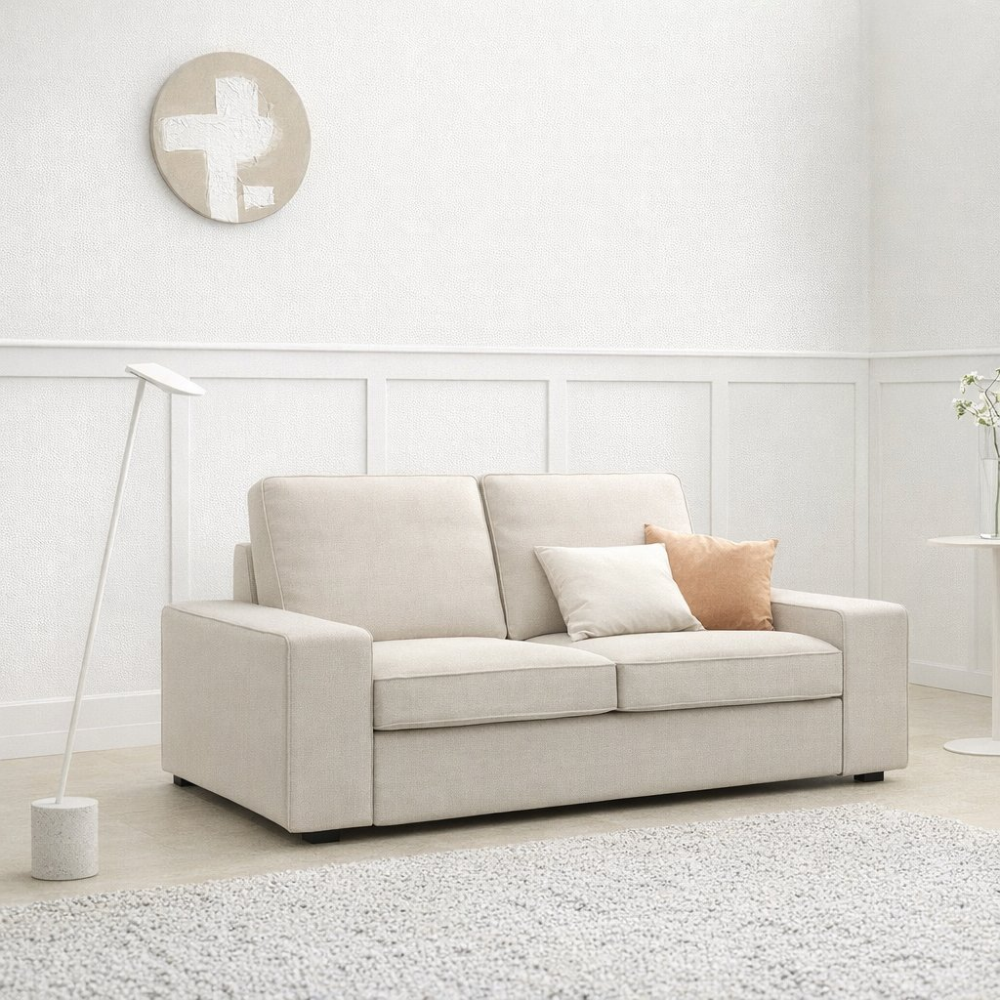 제품 A/91 · 구도 재현 98 QA 지적 5건
전체적으로 IKEA KIVIK 2인용 소파의 형태, 팔걸이, 쿠션 구조, 패브릭 컬러와 텍스처가 매우 유사하게 재현되었으나, 등받이 쿠션의 두께와 좌방석 하단 봉제선 표현에서 약간의 차이가 있습니다. 팔걸이의 각진 형태는 잘 구현되었으나, 앞쪽 모서리의 라운딩이 레퍼런스보다 덜한 점이 있습니다. 패브릭 컬러와 텍스처도 거의 일치하지만, 생성 결과가 약간 더 밝고 부드럽게 표현되었습니다. 명백한 장식 요소는 추가되지 않았으며, 봉제선은 정상적인 구조로 판단됩니다. 구도 재현도는 거의 완벽합니다. 구도: 카메라 앵글, 프레이밍, 소파 배치, 소품 위치까지 거의 완벽하게 재현됨. 시도 2 · base · 생성 55s 인풋 → 아웃풋 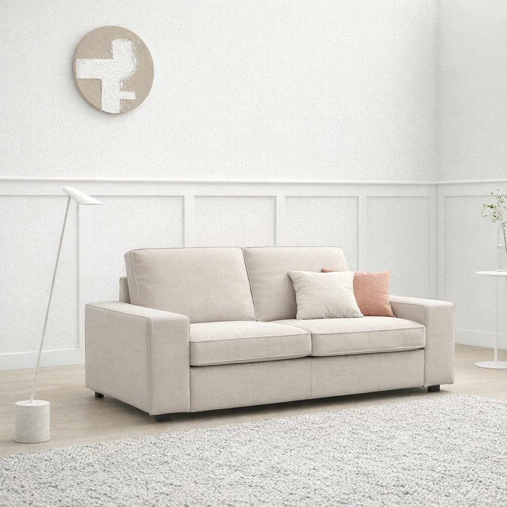 제품 A/91 · 구도 재현 98 QA 지적 5건
전체적으로 IKEA KIVIK 2인용 소파의 형태와 구조, 팔걸이, 쿠션 배치 등 주요 특징을 매우 충실하게 재현하였으나, 등받이 쿠션의 두께와 높이, 좌방석의 앞 엣지 라인, 패브릭 컬러와 텍스처에서 미세한 차이가 존재합니다. 명백한 장식 요소는 추가되지 않았으며, 봉제선과 엣지 라인은 정상적으로 구현되었습니다. 구도 재현도는 거의 완벽하나, 제품 자체의 미세한 차이로 인해 S 등급에는 미치지 못합니다. 구도: 카메라 앵글, 프레이밍, 소파 배치, 소품 위치까지 거의 완벽하게 재현됨. 시도 3 · base · 생성 54s 인풋 → 아웃풋 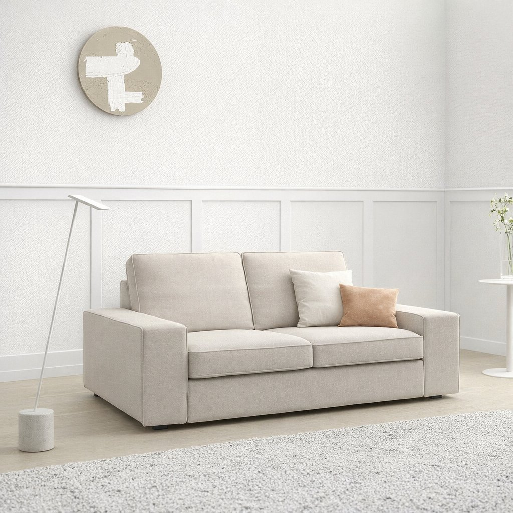 제품 A/94 · 구도 재현 98 QA 지적 5건
제품의 전체적인 형태와 디테일은 매우 충실하게 재현되었으나, 등받이 쿠션의 높이와 볼륨감이 레퍼런스보다 약간 부족하고, 팔걸이 앞쪽 모서리의 각진 느낌이 미세하게 다릅니다. 패브릭 컬러와 텍스처도 거의 유사하나, 조명 영향으로 약간 밝고 부드럽게 표현되었습니다. 명백한 장식 요소는 추가되지 않았으며, 봉제선과 엣지라인은 정상적으로 구현되었습니다. 구도 재현도는 거의 완벽합니다. 구도: 카메라 앵글, 프레이밍, 소파 배치, 소품 위치까지 거의 완벽하게 재현됨. 최종 A/94점 · 3회 · 248s · 임계 미달 |
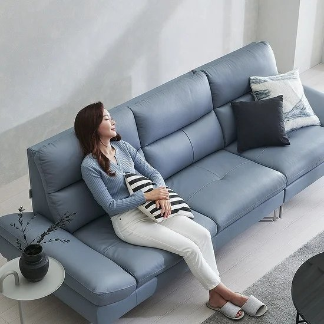 hanssem_B5 | 시도 1 · base · 생성 19s 인풋 → 아웃풋 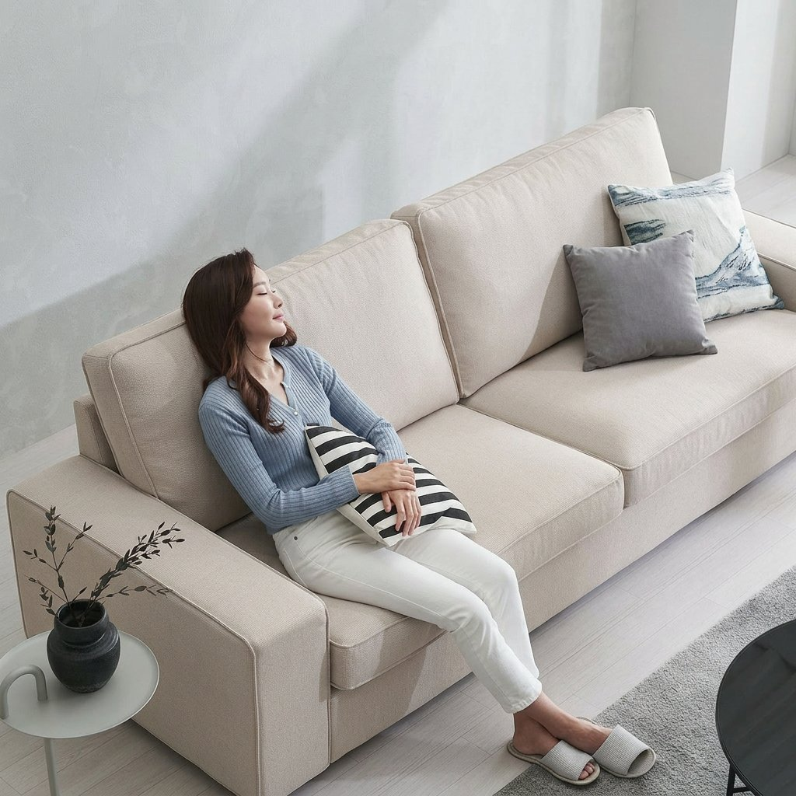 제품 B/78 · 구도 재현 98 QA 지적 6건
전체적으로 KIVIK 소파의 기본적인 형태와 색상, 구조는 잘 반영되었으나, 실루엣이 더 길고 좌방석이 3인용처럼 보이며, 팔걸이와 쿠션의 두께 및 각도, 패브릭 텍스처 등에서 차이가 명확하게 드러남. 봉제선이나 엣지라인은 정상 구조로 감점 사유가 아니나, 쿠션과 팔걸이의 비율 및 디테일에서 KIVIK 특유의 단순하고 각진 느낌이 부족함. 색상은 유사하나 미세하게 다름. 명백한 장식 요소는 없어 ornament 감점은 없음. 구도: 카메라 앵글, 프레이밍, 인물 배치, 소파 위치 등 거의 완벽하게 재현됨. 시도 2 · base · 생성 18s 인풋 → 아웃풋 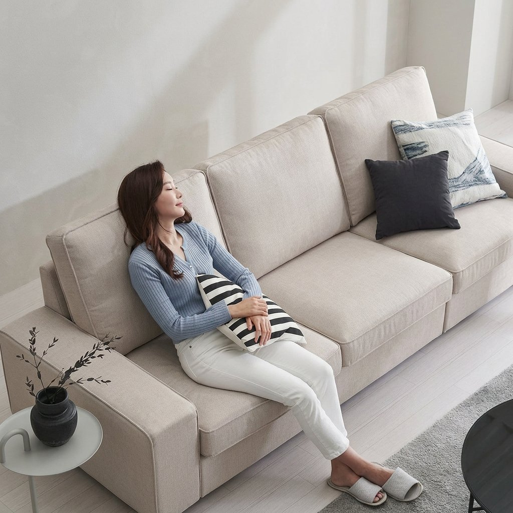 제품 C/68 · 구도 재현 98 QA 지적 7건
B의 소파는 KIVIK 2인용의 전형적인 실루엣과 비례에서 크게 벗어나 있으며, 좌방석이 3개로 분리되어 있고 등받이와 쿠션의 두께, 높이, 전체적인 비율이 다릅니다. 팔걸이와 패브릭 컬러는 유사하나, 텍스처와 쿠션 디테일에서 차이가 있습니다. 명백한 장식 요소는 없으나, 제품 원형 보존 측면에서 KIVIK 2인용과는 명확한 차이가 있어 점수가 낮게 책정되었습니다. 구도 재현은 매우 우수하나, 제품 충실도가 기준에 미달하여 'retry' 판정입니다. 구도: 카메라 앵글, 프레이밍, 인물 배치, 소파 위치 등 구도가 거의 완벽하게 일치함. 시도 3 · base · 생성 21s 인풋 → 아웃풋 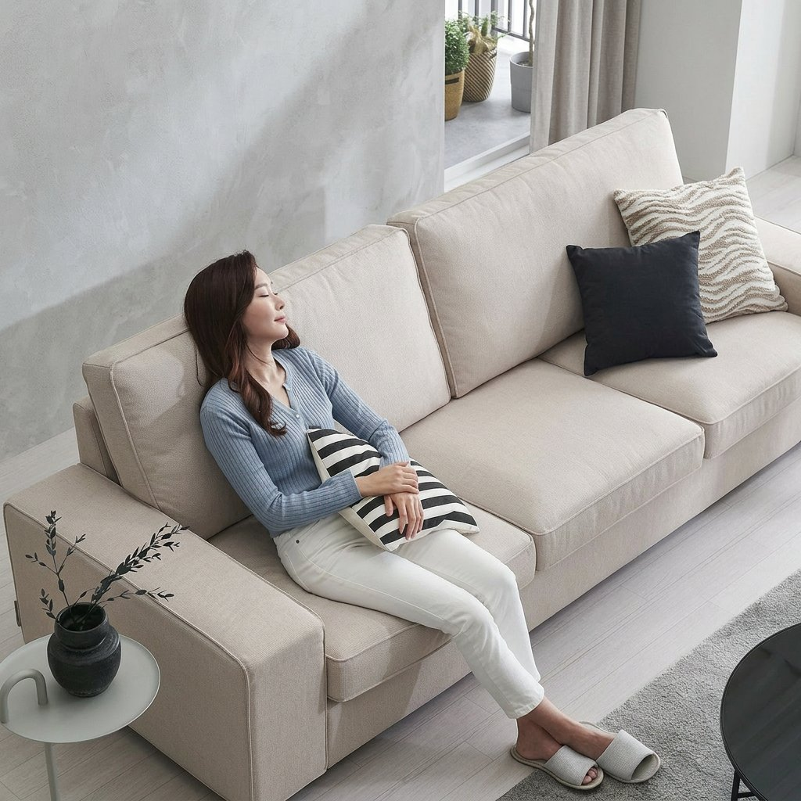 제품 B/75 · 구도 재현 98 QA 지적 6건
생성 결과의 소파는 전반적으로 KIVIK 2인용 소파의 주요 특징(팔걸이 형태, 쿠션 구조, 패브릭 컬러 등)을 어느 정도 반영하였으나, 실루엣 비율이 명확히 다르고 좌방석과 등쿠션의 두께·길이, 전체 길이에서 큰 차이가 있습니다. 패브릭 텍스처도 실제보다 덜 입체적으로 표현되어 있습니다. 명백한 장식 요소는 없으나, 형태적 차이로 인해 점수가 낮아졌습니다. 구도는 거의 완벽하게 일치합니다. 구도: 카메라 앵글, 인물 위치, 소파 배치, 프레이밍이 거의 동일하게 재현됨. 최종 B/78점 · 3회 · 111s · 임계 미달 | 시도 1 · base · 생성 52s 인풋 → 아웃풋 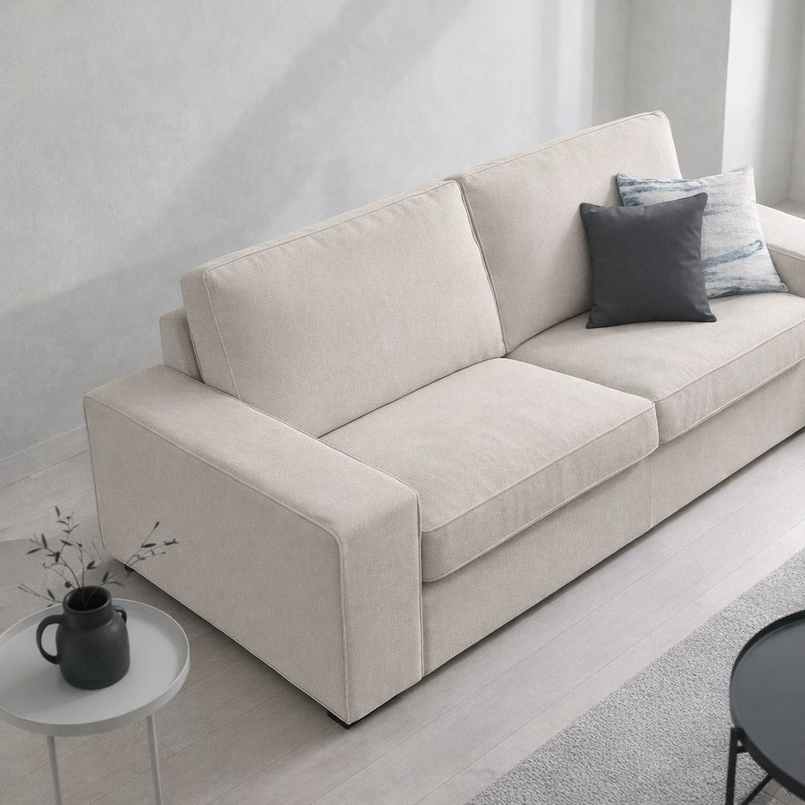 제품 A/94 · 구도 재현 97 QA 지적 5건
생성 결과(B)는 전체적으로 IKEA KIVIK 2인용 소파의 형태, 팔걸이, 쿠션 구조, 패브릭 컬러와 텍스처를 매우 충실하게 재현하였으나, 소파의 길이와 좌방석 비율이 약간 더 넓게 표현되고, 팔걸이 모서리가 살짝 더 둥글게 보이는 등 미세한 차이가 존재합니다. 패브릭 컬러와 텍스처도 거의 유사하지만, 실제 제품 대비 약간 더 밝고 부드러운 느낌이 있습니다. 명백한 장식 요소는 추가되지 않았으며, 봉제선과 엣지라인은 정상적으로 구현되었습니다. 전체적으로 매우 높은 충실도를 보이나, 미세한 형태 및 비율 차이로 인해 95점에는 미치지 못해 tier A로 평가합니다. 구도: 카메라 앵글, 프레이밍, 소파 배치, 소품 위치까지 거의 완벽하게 재현됨. 시도 2 · base · 생성 61s 인풋 → 아웃풋 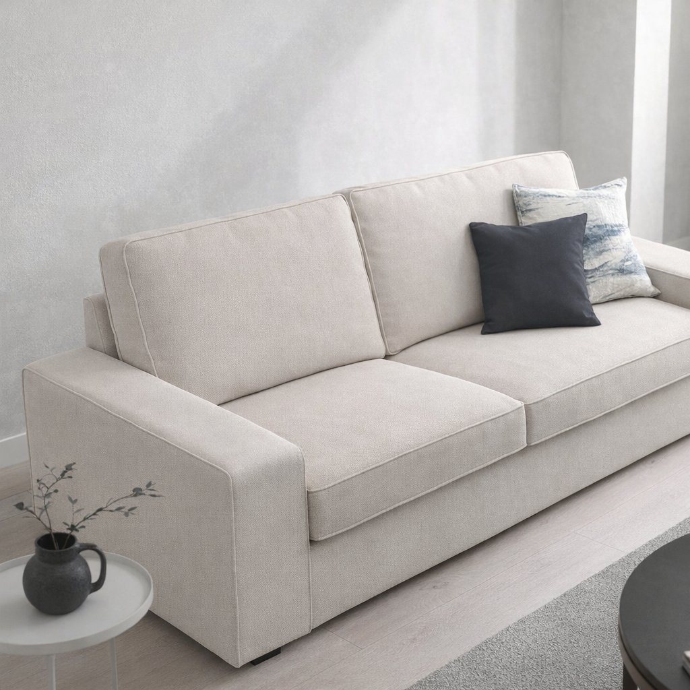 제품 A/92 · 구도 재현 97 QA 지적 5건
전체적으로 IKEA KIVIK 2인용 소파의 형태와 디테일을 잘 재현하였으나, 등받이 쿠션의 두께와 높이, 좌방석의 모서리 라인 등에서 미세한 차이가 존재합니다. 팔걸이의 각도와 두께는 거의 동일하나, 생성 결과가 약간 더 각진 느낌이 있습니다. 패브릭 컬러와 텍스처도 실제 제품과 거의 유사하나, 생성 결과가 약간 더 밝고 균일하게 표현되었습니다. 명백한 장식 요소는 없으며, 봉제선과 엣지라인은 정상적인 구조로 판단됩니다. 구도 재현도는 매우 높으나, 제품의 미세한 형태 차이로 인해 95점 미만으로 평가하였습니다. 구도: 카메라 앵글, 프레이밍, 소파 배치가 거의 완벽하게 일치함. 시도 3 · base · 생성 57s 인풋 → 아웃풋 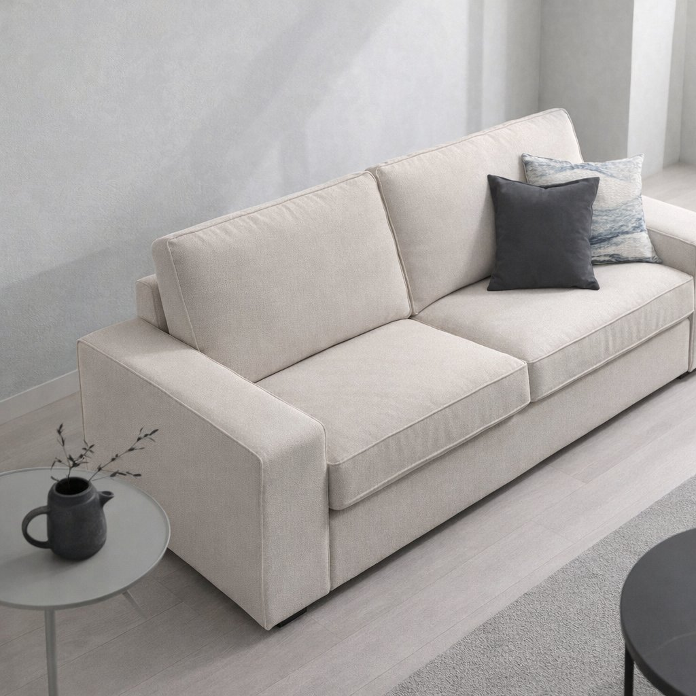 제품 A/93 · 구도 재현 97 QA 지적 5건
생성 결과는 KIVIK 2인용 소파의 전체적인 실루엣, 팔걸이, 쿠션 구성, 패브릭 컬러와 질감을 매우 충실하게 재현하였으나, 등받이 쿠션의 두께와 높이가 약간 더 두껍고 높아 보이며, 패브릭의 미세한 직조감이 실제 제품보다 덜 표현되어 약간의 차이가 있습니다. 명백한 장식 요소는 추가되지 않았으며, 봉제선과 엣지 라인은 정상적인 구조로 판단됩니다. 전반적으로 매우 높은 수준의 제품 충실도를 보이나, 미세한 형태 및 질감 차이로 인해 95점에는 미치지 못합니다. 구도: 카메라 앵글, 프레이밍, 소파 배치가 거의 동일하게 재현됨. 최종 A/94점 · 3회 · 238s · 임계 미달 |
 hanssem_B6 | 시도 1 · base · 생성 27s 인풋 → 아웃풋 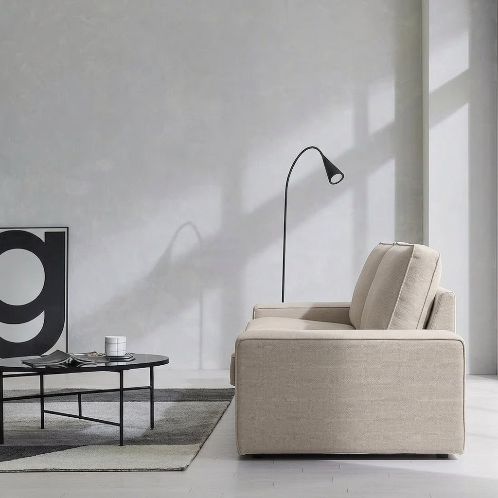 제품 A/93 · 구도 재현 98 QA 지적 6건
전체적으로 KIVIK 2인용 소파의 형태와 디테일을 매우 충실하게 재현하였으나, 등받이 쿠션과 좌방석의 두께가 레퍼런스보다 약간 더 두껍고 높아 보이는 점, 패브릭 텍스처가 조금 더 균일하게 표현된 점 등에서 미세한 차이가 있음. 색상과 봉제선 등은 정상 범위 내에 있으나, 완벽하게 일치하지 않아 95점 미만으로 평가함. 명백한 장식 요소는 없어 감점 사유가 아님. 구도: 카메라 앵글, 프레이밍, 소파 배치가 거의 완벽하게 일치함. 시도 2 · base · 생성 26s 인풋 → 아웃풋 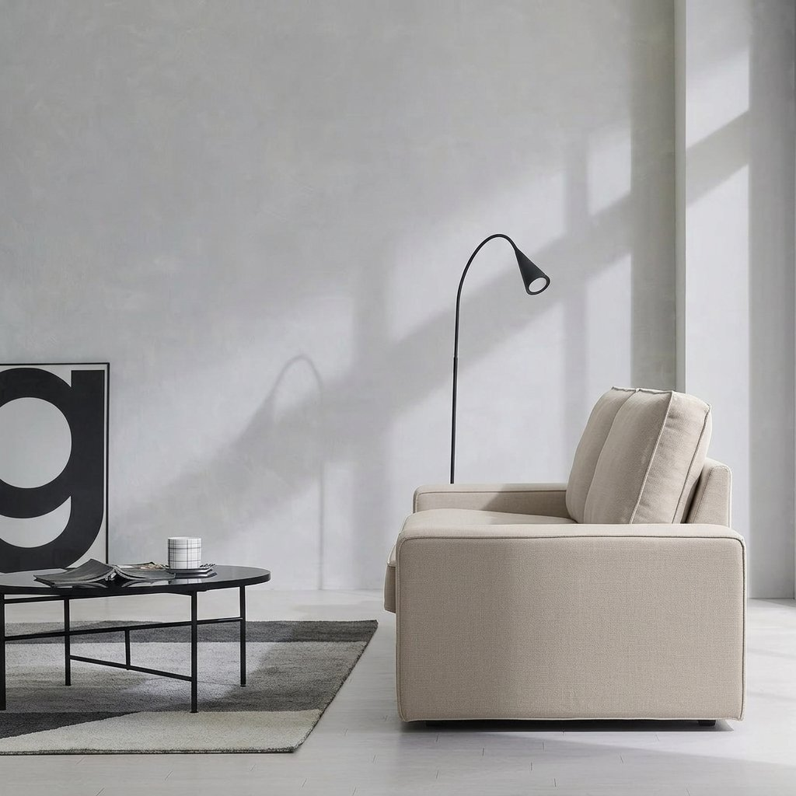 제품 A/93 · 구도 재현 98 QA 지적 6건
소파의 전체적인 실루엣, 팔걸이 형태, 쿠션 구성, 패브릭 컬러와 텍스처 등 주요 제품 특징이 레퍼런스와 매우 유사하게 구현되었습니다. 다만 등받이 쿠션과 좌방석의 두께가 레퍼런스보다 약간 더 두껍고, 팔걸이 앞쪽 모서리의 라운딩이 조금 더 강조되어 있어 미세한 형태 차이가 존재합니다. 명백한 장식적 요소는 없으며, 패브릭 컬러와 텍스처도 거의 일치합니다. 구도 재현도는 매우 높으나, 제품 형태의 미세한 차이로 인해 95점 미만으로 평가하였습니다. 구도: 카메라 앵글, 프레이밍, 소파 배치, 주변 소품 위치까지 거의 완벽하게 재현됨. 시도 3 · base · 생성 16s 인풋 → 아웃풋 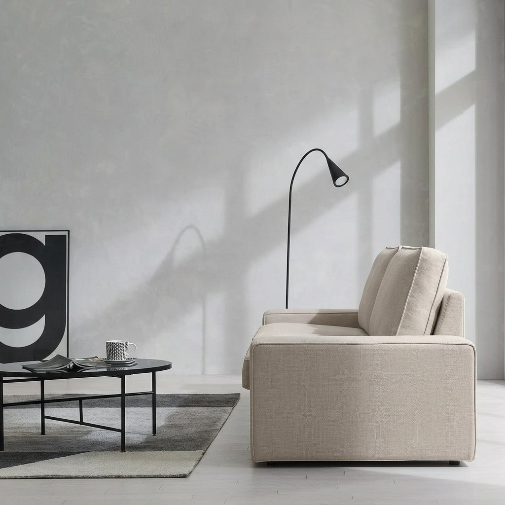 제품 A/89 · 구도 재현 98 QA 지적 7건
전체적으로 KIVIK 2인용 소파의 형태와 디테일을 잘 재현하였으나, 실루엣이 약간 더 낮고 길며, 팔걸이와 쿠션 두께, 패브릭 텍스처 등에서 미세한 차이가 존재합니다. 색상은 거의 유사하나 약간 더 회색빛이 도는 점, 그리고 실제 KIVIK의 두툼하고 평평한 팔걸이 느낌이 약간 덜함. 명백한 장식 요소는 없으나, 이런 미묘한 차이로 인해 S등급에는 미치지 못함. 구도: 카메라 앵글, 프레이밍, 소파 배치, 소품 위치까지 거의 완벽하게 재현됨. 최종 A/93점 · 3회 · 138s · 임계 미달 | 시도 1 · base · 생성 51s 인풋 → 아웃풋 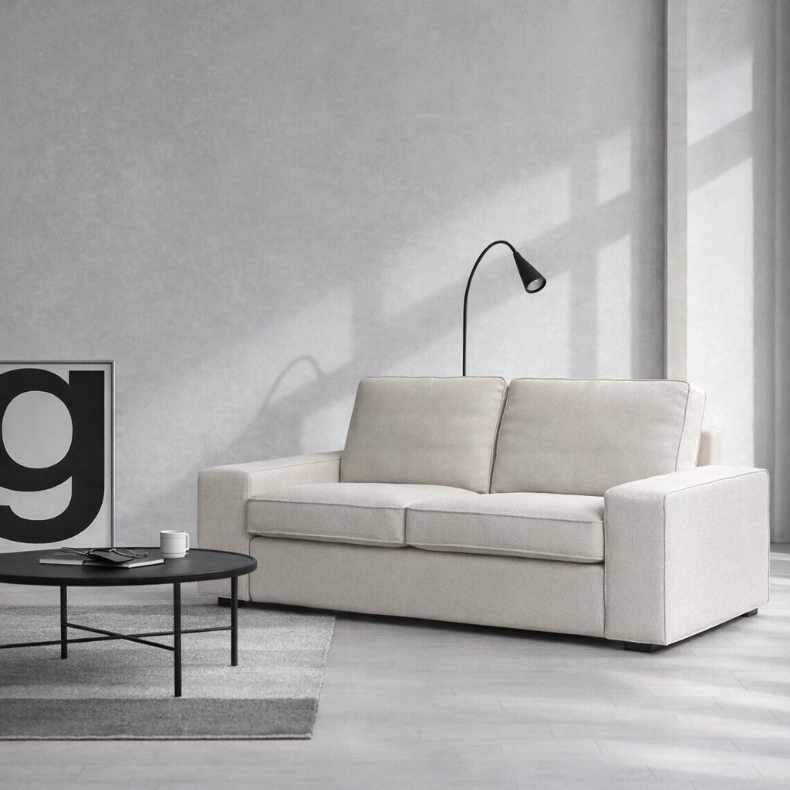 제품 A/91 · 구도 재현 62 QA 지적 5건
전체적으로 KIVIK 2인용 소파의 형태와 디테일을 잘 재현하였으나, 등받이 쿠션의 두께와 높이, 패브릭 컬러의 미세한 차이, 텍스처의 부드러움 등에서 실제 제품과 차이가 있음. 팔걸이와 봉제선 등 주요 구조는 충실하게 반영되었으나, 사진 노이즈 수준 이상의 미묘한 차이가 존재하여 S 등급에는 미치지 못함. 구도 역시 측면 앵글이 아닌 정면에 가까워, 구도 재현도는 중간 수준임. 구도: 카메라 위치와 소파 배치, 소품은 유사하나, 앵글이 정면에 가깝고 프레이밍이 다름. 시도 2 · base · 생성 55s 인풋 → 아웃풋 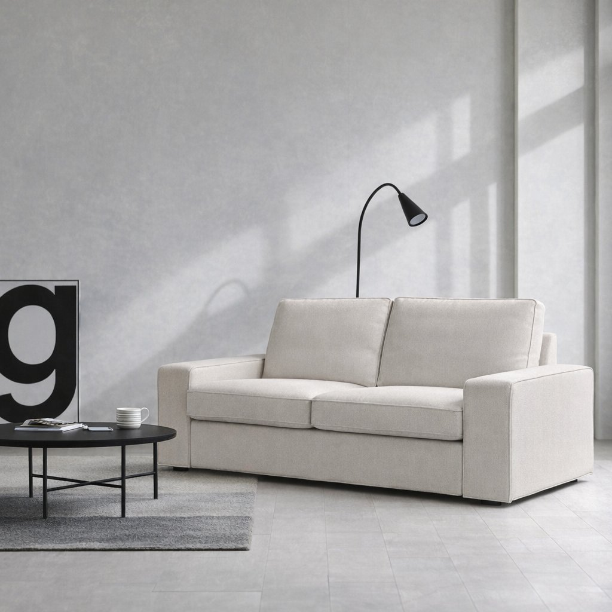 제품 A/92 · 구도 재현 82 QA 지적 6건
전체적으로 KIVIK 2인용 소파의 형태와 디테일을 잘 재현하였으나, 등받이 쿠션의 높이와 두께, 좌방석의 모서리 라인 등에서 미세한 차이가 있습니다. 패브릭 컬러와 텍스처도 거의 유사하지만, 생성 결과가 약간 더 밝고 매끈하게 표현되었습니다. 명백한 장식 요소는 없으나, 완벽하게 동일하지 않아 95점 미만으로 평가하였습니다. 구도: 카메라 위치와 소파 배치, 주변 소품은 유사하나, 구도가 정면 3/4로 달라서 완전 일치하지 않음. 시도 3 · base · 생성 52s 인풋 → 아웃풋 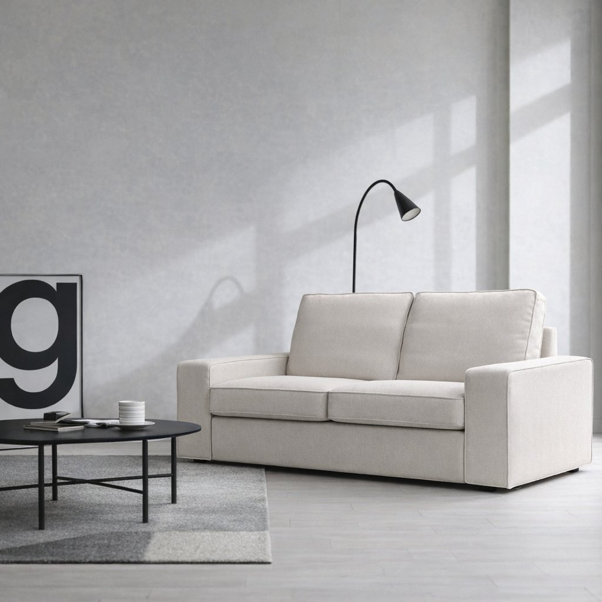 제품 A/91 · 구도 재현 62 QA 지적 6건
전체적으로 KIVIK 2인용 소파의 형태와 구조, 봉제선, 팔걸이 등 주요 특징을 잘 재현하였으나, 등받이 쿠션의 두께와 패브릭 텍스처, 컬러에서 미세한 차이가 존재합니다. 또한, 명백한 장식 요소는 추가되지 않았으나, 실제 제품의 직조감이 덜 표현되어 있습니다. 구도는 소품과 배치가 비슷하지만, 카메라 각도가 달라 구도 재현 점수가 낮습니다. 제품 충실도는 높으나, 95점 미만으로 'retry' 판정입니다. 구도: 카메라 위치와 소파 배치, 소품은 유사하나, 구도 레퍼런스는 측면 뷰이고 생성 결과는 정면 3/4 뷰로 각도가 다름. 최종 A/92점 · 3회 · 220s · 임계 미달 |
| 한샘 구도 | Nano Banana Pro | GPT-Image |
|---|---|---|
hanssem_A1 | 시도 1 · base · 생성 23s 인풋 → 아웃풋 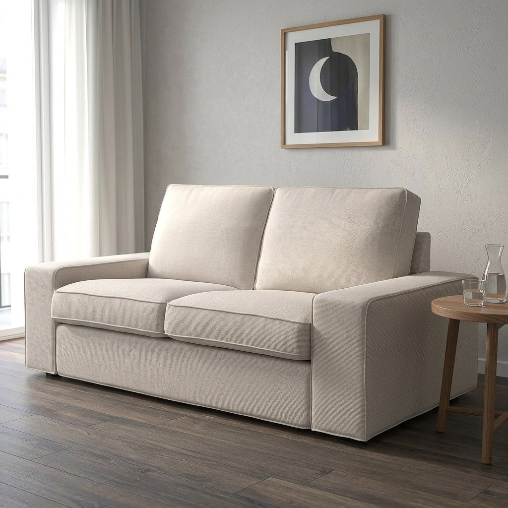 제품 S/95 ✓ · 구도 재현 10 QA 지적 5건
생성 결과의 소파는 전체적인 실루엣, 팔걸이 형태, 쿠션 구성, 패브릭 컬러와 텍스처 등에서 레퍼런스와 매우 유사하며, 봉제선이나 엣지 라인 등은 정상적인 구조로 판단되어 감점 사유가 아님. 다만 쿠션의 각과 두께, 패브릭의 미세한 톤 차이 등에서 아주 경미한 차이가 존재하나, 이는 사진 노이즈 수준의 사소한 차이로 평가됨. 명백한 장식 요소는 추가되지 않았음. 구도: 구도와 카메라 앵글이 전혀 다르며, 프레이밍과 소파 배치도 일치하지 않음. 최종 S/95점 · 1회 · 40s · 통과 | 시도 1 · base · 생성 51s 인풋 → 아웃풋 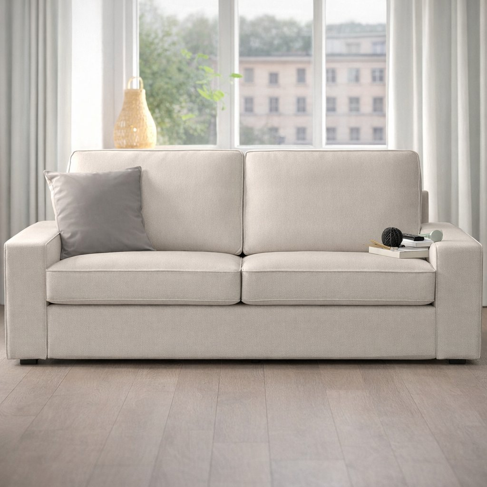 제품 A/91 · 구도 재현 98 QA 지적 5건
전체적으로 KIVIK 2인용 소파의 형태와 디테일을 충실히 재현하였으나, 등받이 쿠션의 두께와 팔걸이의 비율, 쿠션 모서리의 둥근 처리 등에서 미세한 차이가 존재합니다. 패브릭 컬러와 텍스처도 실제 제품과 거의 유사하나, 생성 결과가 약간 더 밝고 부드럽게 표현되었습니다. 명백한 장식 요소는 추가되지 않았으며, 봉제선과 엣지 라인은 정상적으로 구현되었습니다. 구도 재현도는 매우 높으나, 제품의 미세한 형태 차이로 인해 S 등급에는 미치지 못합니다. 구도: 카메라 앵글과 소파의 정면 배치, 크롭이 거의 동일하게 재현됨. 시도 2 · overpaint · 생성 79s 인풋 → 아웃풋 제품 A/92 · 구도 재현 95 QA 지적 5건
전체적으로 KIVIK 2인용 소파의 형태와 구조, 봉제선, 팔걸이, 쿠션 배치 등 주요 특징이 잘 재현되었으나, 등받이 쿠션의 두께와 높이, 좌방석의 평평함, 패브릭 컬러와 텍스처에서 약간의 차이가 존재합니다. 명백한 장식 요소는 없으며, 봉제선과 엣지라인은 정상 구조로 판단됩니다. 구도 재현도는 매우 높으나, 제품의 미세한 형태 및 소재 차이로 인해 95점 미만으로 평가하였습니다. 구도: 카메라 앵글과 프레이밍, 소파 배치가 거의 동일하게 재현됨. 시도 3 · overpaint · 생성 58s 인풋 → 아웃풋 제품 S/95 ✓ · 구도 재현 20 QA 지적 5건
제품의 전체적인 실루엣, 팔걸이 형태, 쿠션 구조, 봉제선 등 주요 특징이 IKEA KIVIK 2인용 소파와 매우 유사하게 재현되었습니다. 패브릭 컬러와 텍스처에서 약간의 차이가 있으나, 실제 사용 환경에서 발생할 수 있는 미세한 차이 수준입니다. 명백한 장식 요소는 추가되지 않았으며, 봉제선과 엣지라인은 정상적인 구조로 판단됩니다. 전반적으로 제품 충실도가 매우 높아 S등급을 부여합니다. 구도: 구도와 카메라 앵글, 프레이밍이 전혀 다르며, 소파 배치와 연출도 일치하지 않음. 최종 S/95점 · 3회 · 243s · 통과 |
hanssem_A2 | 시도 1 · base · 생성 17s 인풋 → 아웃풋 제품 A/94 · 구도 재현 98 QA 지적 5건
전체적으로 IKEA KIVIK 2인용 소파의 형태, 팔걸이, 쿠션 구조, 패브릭 컬러와 텍스처가 매우 충실하게 재현되었으나, 등받이 쿠션의 높이와 비율이 약간 다르고, 패브릭 텍스처가 실제보다 조금 더 부드럽게 표현되어 미세한 차이가 있음. 명백한 장식 요소는 추가되지 않았으며, 봉제선과 엣지라인은 정상적으로 구현됨. 구도는 거의 완벽하게 일치하나, 제품 재현에서 아주 미세한 차이로 인해 95점 미만으로 평가됨. 구도: 카메라 앵글, 프레이밍, 배치, 소품 위치까지 거의 완벽하게 재현됨. 시도 2 · overpaint · 생성 26s 인풋 → 아웃풋 제품 A/94 · 구도 재현 98 QA 지적 4건
생성 결과(B)는 전체적으로 IKEA KIVIK 2인용 소파의 형태와 디테일을 잘 재현하였으나, 팔걸이 두께와 쿠션의 앞면 곡선 등에서 미세한 차이가 존재합니다. 패브릭 텍스처도 실제 제품보다 약간 더 부드럽게 표현되어 있습니다. 그러나 명백한 장식 요소는 추가되지 않았으며, 봉제선과 엣지라인은 정상적으로 구현되었습니다. 구도 재현도는 매우 높으나, 제품의 형태와 디테일에서 의미 있는 미세 차이가 있어 94점으로 A등급, retry 판정입니다. 구도: 카메라 앵글, 프레이밍, 소파 배치, 주변 소품 위치까지 거의 완벽하게 재현됨. 시도 3 · overpaint · 생성 32s 인풋 → 아웃풋 제품 A/93 · 구도 재현 98 QA 지적 4건
전체적으로 IKEA KIVIK 2인용 소파의 형태와 디테일을 잘 재현하였으나, 팔걸이 두께와 쿠션 모서리의 둥근 처리 등에서 미세한 차이가 존재합니다. 패브릭 텍스처가 실제보다 약간 흐릿하게 표현된 점도 감점 요인입니다. 그러나 명백한 장식 요소는 추가되지 않았으며, 색상과 전반적인 구조는 충실하게 재현되었습니다. 구도: 카메라 앵글, 프레이밍, 소파 배치, 주변 소품 위치까지 거의 완벽하게 재현됨. 최종 A/94점 · 3회 · 139s · 임계 미달 | 시도 1 · base · 생성 55s 인풋 → 아웃풋 제품 A/88 · 구도 재현 98 QA 지적 5건
생성 결과 소파는 전체적인 형태와 디테일이 실제 KIVIK 2인용 소파와 매우 유사하나, 좌석 수가 늘어난 듯한 비율 차이와 쿠션의 높이·비율에서 미세한 차이가 있다. 팔걸이 두께도 약간 다르며, 패브릭 컬러와 질감은 거의 일치하나 약간 더 밝게 표현됨. 명백한 장식 요소는 없으나, 위 차이로 인해 95점 이상은 어려움. 구도: 카메라 앵글, 프레이밍, 배치, 소품 위치까지 거의 완벽하게 재현됨. 시도 2 · overpaint · 생성 57s 인풋 → 아웃풋 제품 A/94 · 구도 재현 98 QA 지적 5건
전체적으로 IKEA KIVIK 2인용 소파의 형태와 디테일을 매우 충실하게 재현하였으나, 등받이 쿠션의 두께와 각, 팔걸이 상단의 미세한 곡선, 패브릭 텍스처의 질감 표현 등에서 약간의 차이가 존재합니다. 색상도 거의 유사하지만 미세하게 밝고 회색빛이 도는 점이 있습니다. 명백한 장식 요소는 추가되지 않았으며, 봉제선과 엣지라인은 정상적으로 구현되었습니다. 구도 재현도는 매우 높으나, 제품 자체의 미세한 차이로 인해 95점에 미치지 못해 'retry' 판정입니다. 구도: 카메라 앵글, 프레이밍, 소파 배치, 주변 소품 위치까지 거의 완벽하게 재현됨. 시도 3 · overpaint · 생성 56s 인풋 → 아웃풋 제품 A/91 · 구도 재현 98 QA 지적 5건
전체적으로 IKEA KIVIK 2인용 소파의 형태와 디테일을 잘 재현하였으나, 실루엣이 약간 더 낮고 넓게 표현되었고, 팔걸이 두께와 각도에서 미세한 차이가 있습니다. 쿠션 경계선이 실제보다 더 뚜렷하게 보이며, 패브릭 컬러가 레퍼런스보다 약간 더 밝고 차가운 느낌입니다. 텍스처도 실제보다 조금 더 인공적으로 보입니다. 명백한 장식 요소는 없으며, 봉제선과 엣지라인은 정상 범위입니다. 구도는 거의 완벽하게 일치합니다. 구도: 카메라 앵글, 프레이밍, 소파 배치, 소품 위치까지 거의 완벽하게 재현됨. 최종 A/94점 · 3회 · 225s · 임계 미달 |
hanssem_B1 | 시도 1 · base · 생성 21s 인풋 → 아웃풋 제품 A/89 · 구도 재현 98 QA 지적 5건
전체적으로 KIVIK 2인용 소파의 형태와 디테일을 잘 재현했으나, 팔걸이의 두께와 각진 형태, 실루엣 비율, 쿠션 엣지 라인 등에서 미세하지만 눈에 띄는 차이가 존재합니다. 패브릭 질감도 실제보다 약간 더 인공적으로 표현되어 있습니다. 명백한 장식 요소는 없으며, 봉제선과 엣지 라인은 정상적인 구조로 간주됩니다. 구도 재현도는 거의 완벽하나, 제품 충실도에서 소폭 차이로 S 등급에 미치지 못해 'retry' 판정입니다. 구도: 카메라 앵글, 프레이밍, 소파 배치, 주변 소품 위치까지 거의 완벽하게 일치함. 시도 2 · overpaint · 생성 25s 인풋 → 아웃풋 제품 A/93 · 구도 재현 98 QA 지적 5건
전체적으로 IKEA KIVIK 2인용 소파의 형태와 디테일을 잘 재현하였으나, 등받이 쿠션의 상단 라인과 쿠션의 볼륨감에서 미세한 차이가 있으며, 패브릭 컬러와 텍스처에서도 약간의 차이가 존재합니다. 명백한 장식 요소는 추가되지 않았으며, 봉제선과 엣지라인은 정상적으로 구현되었습니다. 구도 재현도는 매우 우수하나, 제품 자체의 미세한 차이로 인해 95점 미만으로 평가하였습니다. 구도: 카메라 앵글, 프레이밍, 소파 배치, 소품 위치까지 거의 완벽하게 일치함. 시도 3 · overpaint · 생성 29s 인풋 → 아웃풋 제품 A/93 · 구도 재현 98 QA 지적 5건
제품의 전체적인 실루엣, 팔걸이 형태, 쿠션 구성, 패브릭 컬러와 텍스처 등 주요 요소가 레퍼런스와 매우 유사하게 재현되었으나, 등받이 쿠션의 상단 모서리 곡률과 두께, 패브릭 텍스처의 미세한 차이 등에서 약간의 차이가 존재합니다. 명백한 장식 요소는 추가되지 않았으며, 봉제선과 엣지라인은 정상적으로 구현되었습니다. 구도 재현도는 거의 완벽하나, 제품 자체의 미세한 차이로 인해 95점 미만으로 평가하였습니다. 구도: 카메라 앵글, 프레이밍, 소파 배치, 소품 위치 모두 거의 동일하게 재현됨. 최종 A/93점 · 3회 · 145s · 임계 미달 | 시도 1 · base · 생성 61s 인풋 → 아웃풋 제품 A/90 · 구도 재현 97 QA 지적 5건
전체적으로 KIVIK 2인용 소파의 형태와 구조를 잘 재현하였으나, 소파 다리의 형태가 다르고, 팔걸이와 쿠션의 실루엣이 약간 더 각지고 두꺼운 느낌이 있습니다. 패브릭 컬러와 텍스처도 미세하게 차이가 있습니다. 명백한 장식 요소는 추가되지 않았으나, 위와 같은 디테일 차이로 인해 90점(A등급)으로 평가합니다. 구도: 카메라 앵글, 프레이밍, 소파 배치, 소품 위치가 거의 동일하게 재현됨. 시도 2 · overpaint · 생성 65s 인풋 → 아웃풋 제품 A/94 · 구도 재현 98 QA 지적 4건
전체적으로 IKEA KIVIK 2인용 소파의 형태와 디테일을 매우 충실하게 재현하였으나, 소파 다리의 비율이 약간 더 짧고 두꺼워 보이며, 팔걸이와 쿠션의 각진 느낌이 레퍼런스보다 조금 더 강조되어 있음. 패브릭 색상도 미세하게 더 밝고 차가운 톤으로 표현됨. 봉제선이나 엣지라인 등은 정상적으로 구현되어 있으며, 명백한 장식 요소는 추가되지 않음. 전반적으로 매우 우수하나, 미세한 형태 및 색상 차이로 인해 S 등급에는 미치지 못함. 구도: 카메라 앵글, 프레이밍, 소품 배치, 러그 위치까지 거의 완벽하게 재현됨. 시도 3 · overpaint · 생성 55s 인풋 → 아웃풋 제품 A/92 · 구도 재현 98 QA 지적 4건
전체적으로 KIVIK 2인용 소파의 형태와 디테일을 매우 충실하게 재현하였으나, 팔걸이 두께와 쿠션의 각, 패브릭 컬러에서 미세한 차이가 존재합니다. 패브릭 텍스처도 실제보다 약간 더 균일하게 표현되어 있습니다. 명백한 장식 요소는 추가되지 않았으며, 봉제선과 엣지라인은 정상적으로 구현되었습니다. 구도 재현도는 거의 완벽하나, 제품 자체의 미세한 차이로 인해 95점 미만으로 평가하였습니다. 구도: 카메라 앵글, 프레이밍, 소파와 테이블 배치, 러그 위치까지 거의 완벽하게 재현됨. 최종 A/94점 · 3회 · 230s · 임계 미달 |
hanssem_B2 | 시도 1 · base · 생성 26s 인풋 → 아웃풋 제품 A/92 · 구도 재현 98 QA 지적 5건
전체적으로 IKEA KIVIK 2인용 소파의 형태와 디테일을 매우 잘 재현하였으나, 팔걸이의 두께와 높이, 등받이 쿠션의 두께 및 각도에서 미세한 차이가 존재합니다. 패브릭 컬러와 텍스처도 거의 유사하지만, 생성 결과가 약간 더 밝고 매끈하게 표현되었습니다. 명백한 장식 요소는 추가되지 않았으며, 봉제선과 엣지라인은 정상적으로 구현되었습니다. 구도 재현도는 매우 높으나, 제품의 미세한 형태 차이로 인해 95점 미만으로 평가하였습니다. 구도: 카메라 앵글, 프레이밍, 소파 배치, 연출이 거의 완벽하게 일치함. 시도 2 · overpaint · 생성 28s 인풋 → 아웃풋 제품 A/92 · 구도 재현 98 QA 지적 5건
전체적으로 IKEA KIVIK 2인용 소파의 형태와 디테일을 잘 재현하였으나, 팔걸이 두께와 쿠션의 각도, 패브릭의 미세한 색상 및 질감 차이가 존재합니다. 봉제선이나 엣지라인 등은 정상 구조로 간주되어 감점 사유가 아니며, 명백한 장식 요소도 추가되지 않았습니다. 구도 재현도는 매우 높으나, 제품의 미세한 형태 및 질감 차이로 인해 95점 이상에는 미치지 못해 tier A, verdict는 retry로 평가합니다. 구도: 카메라 앵글, 프레이밍, 소파 배치, 연출이 거의 완벽하게 일치함. 시도 3 · overpaint · 생성 25s 인풋 → 아웃풋 제품 A/92 · 구도 재현 97 QA 지적 6건
전체적으로 IKEA KIVIK 2인용 소파의 형태와 디테일을 잘 재현하였으나, 팔걸이 두께, 쿠션 각도, 다리 표현 등에서 미세한 차이가 존재합니다. 패브릭 컬러와 텍스처도 거의 유사하나, 약간의 색감 차이와 질감의 균일함이 관찰됩니다. 명백한 장식 요소는 추가되지 않았으며, 봉제선과 엣지라인은 정상적으로 표현되었습니다. 구도 재현도는 매우 높으나, 제품 자체의 미세한 차이로 인해 S 등급에는 미치지 못합니다. 구도: 카메라 앵글, 프레이밍, 소파 배치, 연출이 거의 동일하게 재현됨. 최종 A/92점 · 3회 · 140s · 임계 미달 | 시도 1 · base · 생성 58s 인풋 → 아웃풋 제품 A/93 · 구도 재현 98 QA 지적 4건
생성 결과(B)는 전체적으로 IKEA KIVIK 2인용 소파의 형태와 디테일을 충실히 재현하였으나, 팔걸이 두께와 쿠션 모서리의 곡률 등에서 미세한 차이가 존재합니다. 패브릭 컬러와 질감도 거의 동일하나, 실제 제품보다 약간 더 밝고 균일하게 표현되었습니다. 명백한 장식 요소는 추가되지 않았으며, 봉제선과 엣지라인은 정상적으로 구현되었습니다. 구도 재현도는 매우 높으나, 제품의 미세한 형태 차이로 인해 95점 미만으로 평가하였습니다. 구도: 카메라 앵글, 프레이밍, 소파 배치가 거의 완벽하게 일치함. 시도 2 · overpaint · 생성 55s 인풋 → 아웃풋 제품 A/93 · 구도 재현 98 QA 지적 4건
생성 결과(B)는 전체적으로 IKEA KIVIK 2인용 소파의 형태와 디테일을 매우 충실하게 재현하였으나, 팔걸이 두께와 쿠션의 각도 등에서 미세한 차이가 존재합니다. 패브릭 컬러와 질감도 거의 동일하나, 생성 결과가 약간 더 밝고 균일하게 표현되어 실제 제품의 미묘한 텍스처 차이가 덜 드러납니다. 명백한 장식 요소는 추가되지 않았으며, 봉제선과 엣지라인은 정상적으로 구현되었습니다. 구도 재현도는 매우 높아, 전체적인 연출과 배치가 거의 동일합니다. 그러나 제품의 미세한 형태 차이로 인해 95점 미만으로 평가하였습니다. 구도: 카메라 앵글, 프레이밍, 소파 배치가 거의 완벽하게 일치함. 시도 3 · overpaint · 생성 57s 인풋 → 아웃풋 제품 S/95 ✓ · 구도 재현 97 QA 지적 5건
생성 결과(B)는 IKEA KIVIK 2인용 소파의 전체적인 실루엣, 팔걸이 형태, 쿠션 구조, 패브릭 컬러와 텍스처를 매우 충실하게 재현하였으며, 명백한 장식 요소도 추가되지 않았다. 팔걸이 두께와 쿠션 모서리의 미세한 차이, 패브릭의 약간 더 부드러운 질감 등 사소한 차이만 존재하여 S등급에 해당한다. 구도: 카메라 앵글, 프레이밍, 소파 배치, 배경 연출이 거의 동일하게 재현됨. 최종 S/95점 · 3회 · 212s · 통과 |
hanssem_B3 | 시도 1 · base · 생성 26s 인풋 → 아웃풋 제품 A/88 · 구도 재현 98 QA 지적 5건
전체적으로 KIVIK 2인용 소파의 형태와 디테일을 잘 재현하였으나, 실루엣이 약간 더 낮고 넓으며, 팔걸이의 두께와 각도가 미묘하게 다릅니다. 좌방석과 등쿠션의 비율도 KIVIK보다 약간 더 크게 표현되어 있습니다. 패브릭 컬러는 거의 유사하나 미세하게 더 밝고 노란빛이 돌며, 텍스처도 실제 KIVIK의 직조감보다는 부드럽게 표현되었습니다. 명백한 장식 요소는 없으며, 봉제선과 엣지라인은 정상적인 구조로 판단됩니다. 구도는 거의 완벽하게 일치하나, 제품의 미세한 형태 차이로 인해 95점 이상에는 미치지 못합니다. 구도: 카메라 앵글, 인물 위치, 프레이밍이 거의 동일하게 재현됨. 시도 2 · overpaint · 생성 19s 인풋 → 아웃풋 제품 A/91 · 구도 재현 98 QA 지적 5건
전체적으로 KIVIK 2인용 소파의 형태와 특징을 잘 재현하였으나, 등받이 쿠션의 높이와 좌방석의 각진 형태, 패브릭 텍스처의 미세한 차이 등에서 레퍼런스와 약간의 차이가 존재합니다. 색상도 거의 유사하지만 미묘하게 노란빛이 감지됩니다. 명백한 장식 요소는 없으며, 봉제선과 엣지라인은 정상적으로 구현되었습니다. 구도는 거의 완벽하게 일치하나, 제품 충실도에서 소폭 차이로 S등급에 미치지 못해 재시도 권고합니다. 구도: 카메라 앵글, 인물 포즈, 프레이밍이 거의 동일하게 재현됨. 시도 3 · overpaint · 생성 25s 인풋 → 아웃풋 제품 A/88 · 구도 재현 97 QA 지적 5건
전체적으로 KIVIK 2인용 소파의 형태와 디테일을 잘 재현하였으나, 실루엣이 약간 더 낮고 넓으며, 팔걸이와 쿠션 두께가 미세하게 다르고, 패브릭 색상과 텍스처도 원본과 약간 차이가 있습니다. 명백한 장식 요소는 없으며, 봉제선과 엣지라인은 정상적으로 표현되었습니다. 구도는 거의 완벽하게 일치하나, 제품의 형태와 소재에서 의미 있는 차이가 있어 95점 미만으로 평가합니다. 구도: 카메라 앵글, 인물 포즈, 프레이밍이 거의 동일하게 재현됨 최종 A/91점 · 3회 · 138s · 임계 미달 | 시도 1 · base · 생성 50s 인풋 → 아웃풋 제품 A/90 · 구도 재현 93 QA 지적 6건
전체적으로 KIVIK 2인용 소파의 형태와 디테일을 잘 재현하였으나, 실루엣이 약간 더 넓고 방석 두께, 팔걸이 각도 등에서 미세한 차이가 있습니다. 패브릭 컬러와 텍스처도 거의 유사하지만, 실제 제품보다 약간 더 밝고 부드럽게 표현되었습니다. 명백한 장식 요소는 없으며, 봉제선과 엣지라인은 정상적으로 구현되었습니다. 구도 재현도는 매우 높으나, 제품 점수에서 미세한 차이로 인해 95점 미만으로 평가되어 'retry' 판정입니다. 구도: 카메라 앵글, 인물 포즈, 배경 연출이 거의 동일하나 소파 크롭 범위가 약간 다름. 시도 2 · overpaint · 생성 65s 인풋 → 아웃풋 제품 A/93 · 구도 재현 97 QA 지적 5건
전체적으로 KIVIK 소파의 형태와 디테일을 잘 재현하였으나, 팔걸이의 두께와 각도, 실루엣의 각진 느낌, 쿠션 경계선의 표현 등에서 미세한 차이가 존재합니다. 패브릭 컬러와 텍스처도 약간의 차이가 있으나, 명백한 장식 요소는 추가되지 않았습니다. 구도는 거의 완벽하게 일치하나, 제품의 세부 디테일에서 의미 있는 차이가 있어 95점 미만으로 평가하였습니다. 구도: 카메라 앵글, 인물 위치, 프레이밍이 거의 동일하게 재현됨. 시도 3 · overpaint · 생성 59s 인풋 → 아웃풋 제품 A/93 · 구도 재현 97 QA 지적 5건
전체적으로 KIVIK 2인용 소파의 형태와 디테일을 매우 충실하게 재현하였으나, 팔걸이와 등받이의 두께, 실루엣의 각짐, 쿠션 모서리의 표현 등에서 미세한 차이가 존재합니다. 원단 색상과 텍스처도 실제 제품과 거의 유사하나, 생성 결과가 약간 더 밝고 균일하게 표현되어 실제감이 다소 감소합니다. 명백한 장식 요소는 없으며, 봉제선과 엣지라인은 정상적으로 구현되었습니다. 구도 재현도는 매우 높으나, 제품의 미세한 형태 차이로 인해 S등급에는 미치지 못합니다. 구도: 카메라 앵글, 인물 포즈, 프레이밍이 거의 동일하게 재현됨. 최종 A/93점 · 3회 · 232s · 임계 미달 |
hanssem_B4 | 시도 1 · base · 생성 17s 인풋 → 아웃풋 제품 A/91 · 구도 재현 99 QA 지적 4건
생성 결과(B)는 전체적으로 IKEA KIVIK 2인용 소파의 형태와 디테일을 잘 재현하였으나, 팔걸이 두께와 쿠션 모서리의 둔탁함 등에서 미세한 차이가 존재합니다. 패브릭 질감도 실제 제품보다 약간 더 부드럽게 표현되어 있습니다. 그러나 명백한 장식 요소는 추가되지 않았으며, 봉제선 등은 정상적인 구조로 판단됩니다. 구도 재현도는 거의 완벽합니다. 구도: 카메라 앵글, 프레이밍, 소파 배치가 거의 완벽하게 일치함. 시도 2 · overpaint · 생성 28s 인풋 → 아웃풋 제품 A/94 · 구도 재현 98 QA 지적 6건
생성 결과(B)는 전체적으로 IKEA KIVIK 2인용 소파의 형태와 디테일을 잘 재현하였으나, 소파 다리의 노출이 부족하고, 등받이 쿠션의 두께와 각진 형태, 패브릭 색상의 미세한 차이 등에서 실제 제품(A)과 약간의 차이가 존재합니다. 그러나 명백한 장식 요소는 없으며, 전반적으로 높은 충실도를 보입니다. 구도 재현도는 거의 완벽합니다. 구도: 카메라 앵글, 프레이밍, 소파 배치 등 전체적인 구도가 거의 완벽하게 일치함. 시도 3 · overpaint · 생성 22s 인풋 → 아웃풋 제품 A/92 · 구도 재현 98 QA 지적 6건
생성 결과(B)는 전체적으로 IKEA KIVIK 2인용 소파의 형태와 디테일을 잘 재현하였으나, 쿠션과 팔걸이의 두께, 패브릭 컬러와 텍스처에서 미세한 차이가 존재합니다. 명백한 장식 요소는 없으며, 봉제선과 엣지 라인은 정상적인 구조로 판단됩니다. 구도 재현도는 매우 높으나, 제품의 세부 디테일에서 약간의 차이로 인해 S등급에는 미치지 못합니다. 구도: 카메라 앵글, 프레이밍, 소파 배치 등 구도가 거의 완벽하게 일치함. 최종 A/94점 · 3회 · 121s · 임계 미달 | 시도 1 · base · 생성 52s 인풋 → 아웃풋 제품 A/94 · 구도 재현 98 QA 지적 6건
전체적으로 IKEA KIVIK 2인용 소파의 형태와 디테일을 매우 충실하게 재현하였으나, 등받이 쿠션의 두께와 패브릭 텍스처의 미세한 차이, 그리고 패브릭 컬러의 약간 밝은 톤 등에서 소폭 차이가 존재합니다. 봉제선과 엣지라인은 정상적으로 구현되어 감점 사유가 아니며, 명백한 장식 요소도 추가되지 않았습니다. 구도 재현도는 거의 완벽하나, 제품 자체의 미세한 차이로 인해 95점 미만으로 평가하였습니다. 구도: 카메라 앵글, 프레이밍, 소파 배치, 소품 위치까지 거의 완벽하게 재현됨. 시도 2 · overpaint · 생성 64s 인풋 → 아웃풋 제품 A/93 · 구도 재현 98 QA 지적 5건
생성 결과(B)는 전체적으로 IKEA KIVIK 2인용 소파의 형태와 디테일을 매우 충실하게 재현하였으나, 팔걸이 두께와 등받이 쿠션의 각도 및 높이에서 미세한 차이가 있습니다. 패브릭 컬러와 텍스처도 거의 유사하지만, 실제 제품보다 약간 더 밝고 부드럽게 표현되었습니다. 명백한 장식 요소는 없으며, 봉제선과 엣지라인은 정상적인 구조로 판단됩니다. 구도 재현도는 매우 높으나, 제품의 미세한 형태 차이로 인해 95점 미만으로 평가되어 'retry' 판정입니다. 구도: 카메라 앵글, 프레이밍, 소파 배치, 소품 위치까지 거의 완벽하게 재현됨. 시도 3 · overpaint · 생성 56s 인풋 → 아웃풋 제품 A/94 · 구도 재현 98 QA 지적 5건
전체적으로 IKEA KIVIK 2인용 소파의 형태와 디테일을 매우 충실하게 재현하였으나, 팔걸이 두께와 쿠션 모서리의 둥근 처리, 패브릭 텍스처의 미세한 차이 등에서 약간의 차이가 존재합니다. 색상과 장식 요소는 거의 완벽하게 일치하며, 명백한 장식적 요소는 추가되지 않았습니다. 구도 재현도는 매우 우수하나, 제품 자체의 미세한 형태 차이로 인해 95점에 미치지 못해 'retry' 판정입니다. 구도: 카메라 앵글, 프레이밍, 소파 배치, 주변 소품 위치까지 거의 완벽하게 재현됨. 최종 A/94점 · 3회 · 231s · 임계 미달 |
hanssem_B5 | 시도 1 · base · 생성 22s 인풋 → 아웃풋 제품 C/66 · 구도 재현 98 QA 지적 7건
B의 소파는 전체적인 컬러와 팔걸이 형태는 KIVIK과 유사하나, 좌석 수와 실루엣 비율, 쿠션의 두께와 형태, 다리 디자인 등에서 명확한 차이가 있습니다. 특히 2인용 KIVIK의 컴팩트한 비율과 달리 B는 3인 이상 좌석으로 보이며, 등받이와 방석의 모서리 라인도 KIVIK 특유의 둥근 느낌이 부족합니다. 패브릭 컬러는 근접하지만 텍스처가 더 매끈하게 표현되어 있습니다. 명백한 장식 요소는 없으나, 전체적으로 제품 원형 보존이 미흡하여 점수가 낮게 책정되었습니다. 구도: 카메라 앵글, 인물 포즈, 소파 배치, 프레이밍이 거의 동일하게 재현됨. 시도 2 · overpaint · 생성 32s 인풋 → 아웃풋 제품 C/65 · 구도 재현 98 QA 지적 6건
B의 소파는 전체적인 실루엣과 좌석 수, 팔걸이와 쿠션의 비율 등에서 KIVIK 2인용과 명확한 차이가 있다. 특히 좌석이 더 많고, 팔걸이와 등받이의 두께 및 각도가 다르며, 쿠션의 분할 방식도 상이하다. 패브릭 컬러와 텍스처는 유사하나, 미세한 직조감이 부족하다. 명백한 장식 요소는 없으나, 제품 원형 보존 측면에서 차이가 커 감점이 크다. 구도: 카메라 앵글, 인물 포즈, 프레이밍, 소품 배치가 거의 동일하게 재현됨. 시도 3 · overpaint · 생성 22s 인풋 → 아웃풋 제품 B/77 · 구도 재현 98 QA 지적 7건
소파의 전체적인 실루엣과 팔걸이 형태, 패브릭 컬러와 텍스처는 KIVIK과 유사하나, 좌석 수가 3개로 늘어나고 등받이 쿠션이 더 높고 두꺼워져 제품 원형과 차이가 큽니다. 쿠션 분할 방식도 다르며, 이는 KIVIK 2인용의 핵심적인 특징을 훼손합니다. 명백한 장식 요소는 없으나, 제품의 구조적 차이로 인해 점수가 낮아졌습니다. 구도: 카메라 앵글, 인물 포즈, 소파 배치, 프레이밍이 거의 동일하게 재현됨. 최종 B/77점 · 3회 · 131s · 임계 미달 | 시도 1 · base · 생성 79s 인풋 → 아웃풋 제품 S/95 ✓ · 구도 재현 97 QA 지적 5건
전체적으로 IKEA KIVIK 2인용 소파의 실루엣, 팔걸이 형태, 쿠션 구조, 패브릭 컬러와 텍스처가 매우 충실하게 재현되었습니다. 등받이 쿠션 두께와 팔걸이 상단의 미세한 각도 차이, 좌방석 하단 엣지 라인의 강조 정도 등 사소한 차이가 있으나, 전반적으로 실제 제품과의 차이는 사진 노이즈 수준에 불과합니다. 명백한 장식 요소는 추가되지 않았으며, 봉제선과 엣지 라인은 정상적인 구조로 판단됩니다. 구도: 카메라 앵글, 프레이밍, 소파 배치가 거의 동일하게 재현됨. 최종 S/95점 · 1회 · 96s · 통과 |
hanssem_B6 | 시도 1 · base · 생성 17s 인풋 → 아웃풋 제품 A/90 · 구도 재현 98 QA 지적 6건
생성 결과의 소파는 전체적으로 IKEA KIVIK 2인용 소파의 형태와 디테일을 잘 재현하였으나, 등받이 쿠션의 두께와 높이, 팔걸이의 각진 느낌, 패브릭 컬러의 미세한 차이, 그리고 텍스처의 인공적인 느낌 등에서 약간의 차이가 존재합니다. 명백한 장식 요소는 없으며, 봉제선과 엣지 라인은 정상적인 구조로 판단됩니다. 구도 재현도는 매우 우수하나, 제품의 세부 디테일에서 의미 있는 차이가 있어 95점 미만으로 평가하였습니다. 구도: 카메라 앵글, 프레이밍, 소파 배치 등 구도가 거의 완벽하게 일치함. 시도 2 · overpaint · 생성 22s 인풋 → 아웃풋 제품 A/93 · 구도 재현 98 QA 지적 6건
소파의 전체적인 실루엣, 팔걸이 형태, 쿠션 구성, 패브릭 컬러와 텍스처 모두 레퍼런스와 매우 유사하게 재현되었으나, 등받이 쿠션의 두께와 각이 약간 더 두드러지고, 좌방석의 각진 느낌이 레퍼런스보다 조금 더 강조되어 있음. 패브릭 컬러는 거의 동일하나 미세한 톤 차이가 있음. 명백한 장식 요소는 없으며, 봉제선과 엣지 라인은 정상적인 구조로 판단됨. 구도 재현도는 거의 완벽하나, 제품 형태의 미세한 차이로 인해 95점 미만으로 평가함. 구도: 카메라 앵글, 프레이밍, 소파 배치가 거의 완벽하게 일치함. 시도 3 · overpaint · 생성 23s 인풋 → 아웃풋 제품 A/87 · 구도 재현 98 QA 지적 5건
소파의 전체적인 형태와 구조는 KIVIK과 매우 유사하나, 실루엣이 약간 더 낮고 길며, 팔걸이와 쿠션의 두께 및 각도에서 미세한 차이가 있습니다. 패브릭 컬러도 원본보다 약간 더 회색빛이 돌고, 텍스처가 조금 더 거칠게 표현되었습니다. 명백한 장식 요소는 없으며, 봉제선과 엣지라인은 정상적인 구조로 판단됩니다. 구도 재현도는 거의 완벽하나, 제품의 세부 디테일에서 의미 있는 차이가 있어 95점 미만으로 평가합니다. 구도: 카메라 앵글, 프레이밍, 소파 배치, 소품 위치 등 거의 완벽하게 일치함. 최종 A/93점 · 3회 · 112s · 임계 미달 | 시도 1 · base · 생성 52s 인풋 → 아웃풋 제품 A/93 · 구도 재현 97 QA 지적 6건
전체적으로 IKEA KIVIK 2인용 소파의 형태와 디테일을 잘 재현하였으나, 다리의 두께와 쿠션의 각진 형태 등에서 미세한 차이가 존재합니다. 패브릭 컬러와 텍스처도 거의 유사하나, 약간의 색감 차이와 질감의 균일함이 관찰됩니다. 명백한 장식 요소는 없으나, 이러한 세부 차이로 인해 95점 이상에는 미치지 못해 tier A로 평가합니다. 구도: 카메라 앵글, 프레이밍, 소파 배치, 소품 위치 등 거의 완벽하게 재현됨. 시도 2 · overpaint · 생성 56s 인풋 → 아웃풋 제품 A/91 · 구도 재현 62 QA 지적 5건
전체적으로 KIVIK 2인용 소파의 형태와 주요 디테일을 잘 재현하였으나, 등받이 쿠션의 두께와 높이, 패브릭 컬러의 미묘한 차이, 텍스처의 균일함 등에서 실제 제품과 차이가 존재합니다. 팔걸이와 쿠션의 구조는 충실하게 구현되었으며, 불필요한 장식 요소는 추가되지 않았습니다. 그러나 구도 재현도는 측면이 아닌 정면 3/4 각도로 촬영되어, 구도 레퍼런스와의 일치도가 낮아 감점 요인이 됩니다. 구도: 카메라 위치와 소파 배치, 소품 배치는 유사하나, 구도가 정면 3/4 각도로 달라서 재현도가 낮음. 시도 3 · overpaint · 생성 58s 인풋 → 아웃풋 제품 A/91 · 구도 재현 62 QA 지적 5건
전체적으로 KIVIK 2인용 소파의 형태와 구조, 봉제선 등 주요 특징은 잘 재현되었으나, 등받이 쿠션의 두께와 높이, 패브릭 컬러의 미묘한 차이, 텍스처의 디테일 부족 등에서 차이가 있음. 명백한 장식 요소는 추가되지 않았으나, 실제 제품의 미세한 질감과 색감이 완벽하게 일치하지 않아 감점됨. 구도 역시 레퍼런스와 달리 정면 3/4 각도로 촬영되어 재현도가 낮음. 구도: 카메라 위치와 프레이밍, 소파 배치가 구도 레퍼런스와 다르며, 정면 3/4 각도에서 촬영됨. 최종 A/93점 · 3회 · 224s · 임계 미달 |
| 한샘 구도 | Nano Banana Pro | GPT-Image |
|---|---|---|
hanssem_A1 | 시도 1 · aligned · 생성 15s 인풋 → 아웃풋 제품 A/94 · 구도 재현 98 QA 지적 3건
전체적으로 IKEA KIVIK 2인용 소파의 형태와 디테일을 매우 충실하게 재현하였으나, 팔걸이 두께와 쿠션 모서리의 둥근 정도, 하단 다리 표현에서 미세한 차이가 존재합니다. 패브릭 컬러와 질감, 봉제선 등은 레퍼런스와 거의 일치하며, 명백한 장식 요소는 추가되지 않았습니다. 구도 역시 거의 완벽하게 일치하나, 제품의 미세한 형태 차이로 인해 95점에 약간 못 미치는 점수를 부여하였습니다. 구도: 카메라 앵글, 프레이밍, 크롭, 소파 배치가 거의 동일하게 재현됨. 시도 2 · aligned · 생성 17s 인풋 → 아웃풋 제품 S/95 ✓ · 구도 재현 98 QA 지적 4건
전체적으로 실루엣, 팔걸이, 쿠션, 패브릭 컬러와 질감이 레퍼런스와 매우 유사하며, 명백한 장식 요소도 추가되지 않았습니다. 다만 등받이와 좌방석 쿠션의 두께, 팔걸이 하단부 두께 등에서 미세한 차이가 있으나, 이는 사진 노이즈 수준의 사소한 차이로 판단됩니다. 전반적으로 제품 원형이 잘 보존되었습니다. 구도: 카메라 앵글, 프레이밍, 크롭, 소파 배치가 거의 동일하게 재현됨. 최종 S/95점 · 2회 · 58s · 통과 | 시도 1 · aligned · 생성 47s 인풋 → 아웃풋 제품 A/93 · 구도 재현 98 QA 지적 5건
전체적으로 IKEA KIVIK 2인용 소파의 형태와 디테일을 잘 재현하였으나, 정면 실루엣이 약간 더 각지고 평평하게 표현되었고, 팔걸이 두께와 각도가 실제 제품보다 조금 더 두껍고 직선적입니다. 쿠션의 모서리 라인도 실제보다 더 뚜렷하게 보이며, 원단 색상과 텍스처가 실제보다 약간 더 밝고 매끈하게 표현되었습니다. 명백한 장식 요소는 없으며, 봉제선과 엣지라인은 정상적으로 구현되었습니다. 구도는 거의 완벽하게 일치합니다. 구도: 카메라 앵글, 프레이밍, 크롭, 소파 배치가 거의 동일하게 재현됨. 시도 2 · aligned · 생성 42s 인풋 → 아웃풋 제품 A/93 · 구도 재현 99 QA 지적 4건
전체적으로 IKEA KIVIK 2인용 소파의 형태와 디테일을 매우 충실하게 재현하였으나, 팔걸이의 두께와 각도, 실루엣의 각진 느낌, 쿠션의 모서리 라인, 원단 질감 등에서 미세한 차이가 존재합니다. 색상은 거의 동일하며, 명백한 장식 요소는 추가되지 않았습니다. 구도는 거의 완벽하게 일치하나, 제품 자체의 미세한 형태 차이로 인해 95점 미만으로 평가하였습니다. 구도: 카메라 앵글, 프레이밍, 크롭, 소파 배치가 거의 동일하게 재현됨. 시도 3 · aligned · 생성 43s 인풋 → 아웃풋 제품 A/92 · 구도 재현 99 QA 지적 5건
전체적으로 IKEA KIVIK 2인용 소파의 형태와 디테일을 매우 충실하게 재현하였으나, 팔걸이의 두께와 각도, 쿠션의 모서리 표현, 패브릭 컬러와 텍스처에서 미세한 차이가 존재합니다. 명백한 장식 요소는 없으며, 봉제선과 엣지라인은 정상적으로 구현되었습니다. 구도는 거의 완벽하게 일치하나, 제품의 세부 디테일에서 약간의 차이로 인해 95점 미만으로 평가하였습니다. 구도: 카메라 앵글, 프레이밍, 크롭, 소파 배치가 거의 동일하게 재현됨. 최종 A/93점 · 3회 · 182s · 임계 미달 |
hanssem_A2 | 시도 1 · aligned · 생성 20s 인풋 → 아웃풋 제품 A/90 · 구도 재현 98 QA 지적 5건
전체적으로 IKEA KIVIK 2인용 소파의 형태와 디테일을 잘 재현하였으나, 팔걸이의 두께와 각진 정도, 쿠션의 볼륨감 및 패브릭 텍스처에서 미세한 차이가 존재합니다. 색상도 거의 유사하나 약간의 색감 차이가 있습니다. 명백한 장식 요소는 없으며, 봉제선과 엣지 라인은 정상적인 구조로 판단됩니다. 구도 재현도는 매우 높으나, 제품 자체의 미세한 차이로 인해 S등급에는 미치지 못합니다. 구도: 카메라 앵글, 프레이밍, 소파 배치, 소품 위치 등 거의 완벽하게 재현됨. 시도 2 · aligned · 생성 14s 인풋 → 아웃풋 제품 A/89 · 구도 재현 98 QA 지적 5건
전체적으로 IKEA KIVIK 2인용 소파의 형태와 디테일을 잘 재현하였으나, 실루엣이 약간 더 낮고 넓게 표현되었고, 팔걸이와 쿠션의 각진 정도 및 패브릭 컬러·텍스처에서 미세한 차이가 있음. 명백한 장식 요소는 추가되지 않았으며, 봉제선과 엣지라인은 정상적으로 구현됨. 구도는 거의 완벽하게 일치하나, 제품 원형 보존 측면에서 소폭의 차이로 인해 S 등급에는 미치지 못함. 구도: 카메라 앵글, 프레이밍, 배치, 소품 위치까지 거의 완벽하게 일치함. 시도 3 · aligned · 생성 18s 인풋 → 아웃풋 제품 A/87 · 구도 재현 98 QA 지적 5건
전체적으로 KIVIK 2인용 소파의 형태와 디테일을 잘 재현했으나, 실루엣이 약간 더 낮고 넓게 표현되어 비율에서 소폭 차이가 있습니다. 팔걸이 두께와 각도, 쿠션의 모서리 라인, 패브릭 색상과 질감에서도 미세한 차이가 존재합니다. 하지만 명백한 장식 요소는 추가되지 않았으며, 봉제선과 엣지라인은 정상적으로 구현되었습니다. 구도 재현도는 거의 완벽하나, 제품 자체의 미묘한 차이로 인해 S 등급에는 미치지 못합니다. 구도: 카메라 앵글, 프레이밍, 소파 배치, 주변 소품 위치까지 거의 완벽하게 일치함. 최종 A/90점 · 3회 · 100s · 임계 미달 | 시도 1 · aligned · 생성 50s 인풋 → 아웃풋 제품 B/75 · 구도 재현 98 QA 지적 5건
B의 소파는 전체적인 팔걸이, 쿠션 형태, 패브릭 질감, 색상 등은 KIVIK과 유사하나, 좌석과 등받이 쿠션이 3개로 분할되어 있고, 실루엣이 더 길어 2인용 KIVIK의 비율과 다릅니다. 쿠션 개수와 분할 방식이 가장 큰 차이점이며, 그 외에는 세부적인 디테일과 소재 표현은 양호합니다. 명백한 장식 요소는 없으나, 제품의 핵심 구조가 달라 점수가 크게 감점되었습니다. 구도는 거의 완벽하게 재현되었습니다. 구도: 카메라 앵글, 프레이밍, 배치, 연출이 거의 동일하게 재현됨. 시도 2 · aligned · 생성 50s 인풋 → 아웃풋 제품 A/93 · 구도 재현 99 QA 지적 5건
전체적으로 KIVIK 2인용 소파의 형태와 디테일을 매우 충실하게 재현하였으나, 등받이와 팔걸이의 높이 비율, 좌방석과 등쿠션의 두께, 패브릭 컬러와 텍스처에서 미세한 차이가 존재합니다. 명백한 장식 요소는 없으며, 봉제선과 엣지라인은 정상적으로 구현되었습니다. 구도 재현도는 거의 완벽하나, 제품 자체의 미세한 차이로 인해 95점 미만으로 평가하였습니다. 구도: 카메라 앵글, 프레이밍, 소파 배치, 주변 소품 위치까지 거의 완벽하게 재현됨. 시도 3 · aligned · 생성 58s 인풋 → 아웃풋 제품 A/91 · 구도 재현 98 QA 지적 5건
전체적으로 IKEA KIVIK 2인용 소파의 형태와 디테일을 잘 재현하였으나, 팔걸이 두께와 쿠션의 각진 정도, 패브릭 텍스처 표현에서 미세한 차이가 존재합니다. 색상도 거의 유사하지만 약간의 색감 차이가 있습니다. 명백한 장식 요소는 추가되지 않았으며, 봉제선과 엣지 라인은 정상적으로 구현되었습니다. 구도는 거의 완벽하게 일치하나, 제품 자체의 미세한 차이로 인해 95점 이상에는 미치지 못합니다. 구도: 카메라 앵글, 프레이밍, 소파 배치, 소품 위치까지 거의 완벽하게 재현됨. 최종 A/93점 · 3회 · 213s · 임계 미달 |
hanssem_B1 | 시도 1 · aligned · 생성 20s 인풋 → 아웃풋 제품 S/95 ✓ · 구도 재현 98 QA 지적 4건
전체적으로 IKEA KIVIK 2인용 소파의 형태, 팔걸이, 쿠션 구조, 패브릭 컬러와 질감이 매우 충실하게 재현됨. 등받이 쿠션 두께와 좌방석 엣지 라인에서 미세한 차이가 있으나, 실제 제품의 구조적 특징(봉제선, 엣지라인 등)은 정상적으로 구현되어 있음. 명백한 장식 요소는 추가되지 않았으며, 전체적인 제품 원형 보존도가 매우 높음. 구도 역시 거의 완벽하게 일치하여, 제품 충실도와 구도 재현 모두 우수함. 구도: 카메라 앵글, 프레이밍, 소파 배치, 소품 위치까지 거의 완벽하게 일치함. 최종 S/95점 · 1회 · 37s · 통과 | 시도 1 · aligned · 생성 53s 인풋 → 아웃풋 제품 A/93 · 구도 재현 98 QA 지적 4건
생성 결과(B)는 전체적으로 IKEA KIVIK 2인용 소파의 형태와 디테일을 매우 충실하게 재현하였으나, 팔걸이 두께와 방석 쿠션의 두께에서 미세한 차이가 있습니다. 패브릭 컬러와 질감도 거의 유사하나, 실제 제품보다 약간 더 밝고 균일하게 표현되었습니다. 명백한 장식 요소는 추가되지 않았으며, 봉제선과 엣지라인은 정상적인 구조로 판단됩니다. 구도 재현도는 거의 완벽하나, 제품의 미세한 형태 차이로 인해 95점 이상에는 미치지 못해 tier A, verdict는 retry로 평가합니다. 구도: 카메라 앵글, 프레이밍, 소파 배치, 소품 위치까지 거의 완벽하게 재현됨. 시도 2 · aligned · 생성 52s 인풋 → 아웃풋 제품 S/95 ✓ · 구도 재현 98 QA 지적 5건
전체적으로 IKEA KIVIK 2인용 소파의 실루엣, 팔걸이 형태, 쿠션 구조, 패브릭 컬러와 텍스처가 매우 충실하게 재현되었습니다. 등받이 쿠션 두께와 좌방석 엣지의 미세한 차이, 패브릭의 약간 더 밝은 색감 등 사소한 차이만 존재하며, 명백한 장식 요소나 오탐은 없습니다. 전반적으로 실제 제품과 거의 동일한 수준의 재현도를 보여주므로 S등급, pass 판정입니다. 구도: 카메라 앵글, 프레이밍, 소파 배치, 소품 위치까지 거의 완벽하게 재현됨. 최종 S/95점 · 2회 · 146s · 통과 |
hanssem_B2 | 시도 1 · aligned · 생성 19s 인풋 → 아웃풋 제품 A/91 · 구도 재현 98 QA 지적 5건
전체적으로 KIVIK 2인용 소파의 형태와 디테일을 충실히 재현하였으나, 등받이 쿠션의 두께와 팔걸이 앞쪽 모서리의 곡선, 패브릭 텍스처의 미세한 차이 등에서 약간의 차이가 존재합니다. 색상은 거의 동일하나, 조명 영향으로 약간 밝게 보입니다. 명백한 장식 요소는 없으며, 봉제선과 엣지 라인은 정상적인 구조로 판단됩니다. 구도 재현도는 매우 높으나, 제품 자체의 미세한 차이로 인해 S 등급에는 미치지 못합니다. 구도: 카메라 앵글, 프레이밍, 소파 배치가 거의 완벽하게 일치함 시도 2 · aligned · 생성 18s 인풋 → 아웃풋 제품 A/93 · 구도 재현 97 QA 지적 5건
전체적으로 IKEA KIVIK 2인용 소파의 형태와 디테일을 잘 재현하였으나, 팔걸이 두께와 쿠션 엣지의 미세한 곡률 차이, 패브릭 컬러의 미묘한 밝기 차이 등에서 약간의 차이가 존재합니다. 봉제선이나 웰팅 등은 정상 구조로 간주되어 감점 사유가 아니며, 명백한 장식 요소는 추가되지 않았습니다. 구도 재현도는 매우 높으나, 제품 자체의 미세한 형태 및 색상 차이로 인해 95점 미만으로 평가하였습니다. 구도: 카메라 앵글, 프레이밍, 소파 배치가 거의 동일하게 재현됨. 시도 3 · aligned · 생성 21s 인풋 → 아웃풋 제품 A/93 · 구도 재현 98 QA 지적 4건
전체적으로 IKEA KIVIK 2인용 소파의 형태와 디테일을 잘 재현하였으나, 등받이와 좌방석 쿠션의 두께 및 엣지 라인에서 미세한 차이가 보입니다. 팔걸이의 각도와 하단 베이스의 비율도 약간 다르며, 이는 실제 제품의 인상에 영향을 줄 수 있는 부분입니다. 그러나 패브릭 컬러와 질감, 장식 요소의 충실도는 매우 우수합니다. 구도 재현도는 거의 완벽하나, 제품 형태의 미묘한 차이로 인해 95점 미만으로 평가합니다. 구도: 카메라 앵글, 프레이밍, 소파 배치가 거의 완벽하게 일치함. 최종 A/93점 · 3회 · 111s · 임계 미달 | 시도 1 · aligned · 생성 46s 인풋 → 아웃풋 제품 S/95 ✓ · 구도 재현 98 QA 지적 4건
생성 결과(B)는 IKEA KIVIK 2인용 소파의 전체적인 실루엣, 팔걸이 형태, 쿠션 구성, 패브릭 색상 및 질감을 매우 충실하게 재현하였으며, 명백한 장식 요소도 추가되지 않았다. 팔걸이 두께와 쿠션 모서리의 미세한 차이, 패브릭 질감의 약간의 부드러움 등 사소한 차이만 존재하여 S등급에 해당한다. 구도 역시 레퍼런스(C)와 거의 동일하게 재현되어 높은 점수를 부여함. 구도: 카메라 앵글, 프레이밍, 소파 배치, 연출이 거의 완벽하게 일치함. 최종 S/95점 · 1회 · 61s · 통과 |
hanssem_B3 | 시도 1 · aligned · 생성 15s 인풋 → 아웃풋 제품 A/90 · 구도 재현 97 QA 지적 5건
소파의 전체적인 형태와 주요 구조는 IKEA KIVIK 2인용 소파와 매우 유사하게 재현되었으나, 팔걸이의 두께와 각도, 쿠션의 두께, 봉제선 위치 등에서 미세한 차이가 존재합니다. 패브릭 컬러와 텍스처도 실제 제품과 약간의 차이가 있습니다. 명백한 장식 요소는 추가되지 않았으며, 봉제선과 엣지라인은 정상적인 구조로 판단됩니다. 전반적으로 제품의 원형은 잘 보존되었으나, 세부 디테일에서 의미 있는 차이가 있어 90점(A등급)으로 평가합니다. 구도: 카메라 앵글, 인물 포즈, 프레이밍이 거의 동일하게 재현됨. 시도 2 · aligned · 생성 21s 인풋 → 아웃풋 제품 A/92 · 구도 재현 97 QA 지적 5건
전체적으로 KIVIK 2인용 소파의 실루엣, 팔걸이, 쿠션 구조, 패브릭 컬러와 질감이 매우 유사하게 재현되었으나, 등받이 쿠션의 두께와 모서리 라인, 팔걸이 하단부 봉제선 위치 등에서 미세한 차이가 존재합니다. 패브릭 컬러와 텍스처도 거의 유사하지만 약간의 밝기와 질감 차이가 있습니다. 명백한 장식 요소는 없으며, 봉제선은 정상 구조로 판단됩니다. 구도 재현도는 매우 높으나, 제품 디테일에서 약간의 차이로 인해 95점 미만으로 평가되었습니다. 구도: 카메라 앵글, 인물 포즈, 프레이밍이 거의 동일하게 재현됨. 시도 3 · aligned · 생성 18s 인풋 → 아웃풋 제품 A/89 · 구도 재현 97 QA 지적 5건
전체적으로 IKEA KIVIK 2인용 소파의 형태와 디테일을 잘 재현하였으나, 팔걸이의 각진 형태와 두께, 쿠션의 두께, 패브릭 컬러와 텍스처에서 미세한 차이가 존재합니다. 봉제선이나 엣지라인 등은 정상적인 구조로, 추가 장식은 발견되지 않았습니다. 구도는 거의 완벽하게 일치하나, 제품의 세부 디테일에서 의미 있는 차이가 있어 S 등급에는 미치지 못합니다. 구도: 카메라 앵글, 인물 포즈, 프레이밍이 거의 동일하게 재현됨. 최종 A/92점 · 3회 · 111s · 임계 미달 | 시도 1 · aligned · 생성 50s 인풋 → 아웃풋 제품 A/91 · 구도 재현 97 QA 지적 5건
소파의 전체적인 형태와 주요 구조는 IKEA KIVIK 2인용 소파와 매우 유사하게 재현되었으나, 등받이 쿠션의 높이와 볼륨감이 다소 부족하고, 패브릭 컬러가 실제보다 더 밝게 표현되어 약간의 차이가 있습니다. 패브릭 텍스처도 실제보다 부드럽게 묘사되어 미세한 차이가 존재합니다. 명백한 장식 요소는 추가되지 않았으며, 봉제선과 엣지 라인은 정상적인 구조로 판단됩니다. 전반적으로 충실도가 높으나, 미세한 디테일 차이로 인해 S 등급에는 미치지 못합니다. 구도: 카메라 앵글, 인물 포즈, 프레이밍이 거의 동일하게 재현됨. 시도 2 · aligned · 생성 48s 인풋 → 아웃풋 제품 A/89 · 구도 재현 97 QA 지적 5건
전체적으로 KIVIK 2인용 소파의 형태와 디테일을 잘 재현하였으나, 실루엣이 약간 더 낮고 넓으며 팔걸이 두께와 각도가 미세하게 다릅니다. 좌방석과 등쿠션의 비율도 실제 제품보다 약간 더 크게 표현되었습니다. 패브릭 컬러는 실제보다 약간 더 밝고 노란빛이 돌며, 텍스처도 실제보다 부드럽게 묘사되었습니다. 명백한 장식 요소는 없으며, 봉제선과 엣지라인은 정상적으로 표현되었습니다. 구도는 거의 완벽하게 일치하나, 제품의 미세한 형태 차이로 인해 점수가 95점 미만으로 평가되었습니다. 구도: 카메라 앵글, 인물 위치, 프레이밍이 거의 동일하게 재현됨. 시도 3 · aligned · 생성 47s 인풋 → 아웃풋 제품 S/95 ✓ · 구도 재현 97 QA 지적 5건
전체적으로 IKEA KIVIK 2인용 소파의 실루엣, 팔걸이, 쿠션 구조, 패브릭 컬러와 텍스처가 매우 충실하게 재현되었습니다. 봉제선과 엣지 라인은 정상적인 제품 구조로, 추가 장식은 전혀 보이지 않습니다. 등받이 쿠션이 약간 더 두껍게 보이고, 패브릭 텍스처가 일부 부드럽게 표현된 점 외에는 의미 있는 차이가 없습니다. 구도 역시 인물의 자세, 소파의 위치, 카메라 앵글이 거의 완벽하게 일치하여, 전체적으로 매우 높은 충실도를 보입니다. 구도: 카메라 앵글, 인물 위치, 소파 배치, 크롭 등 거의 동일하게 재현됨. 최종 S/95점 · 3회 · 204s · 통과 |
hanssem_B4 | 시도 1 · aligned · 생성 20s 인풋 → 아웃풋 제품 A/92 · 구도 재현 82 QA 지적 5건
전체적으로 KIVIK 소파의 형태와 디테일을 잘 재현하였으나, 실루엣이 레퍼런스보다 더 각지고 정면에서 평평하게 보이며, 팔걸이 두께와 각도가 약간 다릅니다. 쿠션의 모서리 라인도 더 강조되어 있고, 패브릭 컬러와 텍스처가 미세하게 차이 납니다. 명백한 장식 요소는 없으며, 봉제선과 엣지라인은 정상 구조로 판단됩니다. 구도는 배경과 소품은 유사하나, 소파가 정면으로 배치되어 레퍼런스 구도와는 차이가 있습니다. 구도: 카메라 위치와 배경 소품은 유사하나, 소파가 정면으로 배치되어 구도 각도가 다름. 시도 2 · aligned · 생성 19s 인풋 → 아웃풋 제품 A/92 · 구도 재현 98 QA 지적 5건
생성 결과(B)는 전체적으로 IKEA KIVIK 2인용 소파의 형태와 디테일을 충실히 재현하였으나, 팔걸이 두께, 쿠션의 각, 패브릭 컬러와 텍스처에서 미세한 차이가 존재합니다. 봉제선과 엣지 라인은 정상적으로 구현되어 감점 사유가 아니며, 명백한 장식 요소도 추가되지 않았습니다. 구도 재현도는 매우 높으나, 제품 자체의 미묘한 비율 및 디테일 차이로 인해 95점 미만으로 평가하였습니다. 구도: 카메라 앵글, 프레이밍, 소파 배치, 주변 소품 위치까지 거의 완벽하게 일치함. 시도 3 · aligned · 생성 22s 인풋 → 아웃풋 제품 A/91 · 구도 재현 98 QA 지적 5건
전체적으로 IKEA KIVIK 2인용 소파의 형태와 디테일을 잘 재현하였으나, 등받이와 좌방석 쿠션의 두께 및 곡률에서 약간의 차이가 있고, 팔걸이의 각진 느낌과 하단 다리 노출이 부족한 점이 아쉬움. 패브릭 컬러도 미세하게 더 따뜻한 톤으로 표현됨. 그러나 봉제선이나 웰팅 등은 정상적으로 구현되어 있으며, 명백한 장식 요소는 추가되지 않음. 구도 재현도는 거의 완벽함. 구도: 카메라 각도, 프레이밍, 소파 배치, 소품 위치까지 거의 완벽하게 일치함. 최종 A/92점 · 3회 · 111s · 임계 미달 | 시도 1 · aligned · 생성 48s 인풋 → 아웃풋 제품 A/93 · 구도 재현 98 QA 지적 4건
전체적으로 IKEA KIVIK 2인용 소파의 형태와 디테일을 매우 충실하게 재현하였으나, 등받이 쿠션의 두께와 높이, 좌방석 쿠션의 앞 엣지 라인, 팔걸이 상단의 각진 정도 등에서 미세한 차이가 관찰됩니다. 또한 소파 하단의 다리 구조가 거의 보이지 않아 실제 제품의 낮은 다리 느낌이 약간 덜 표현되었습니다. 패브릭 컬러와 질감, 장식 요소는 매우 정확하게 구현되었습니다. 하지만 위의 미세한 형태 차이로 인해 95점에는 미치지 못해 tier A, verdict는 retry로 평가합니다. 구도: 카메라 앵글, 프레이밍, 소파 배치, 소품 위치까지 거의 완벽하게 재현됨. 시도 2 · aligned · 생성 49s 인풋 → 아웃풋 제품 A/93 · 구도 재현 98 QA 지적 4건
전체적으로 IKEA KIVIK 2인용 소파의 형태와 디테일을 매우 충실하게 재현하였으나, 등받이 쿠션의 두께와 각, 팔걸이의 두께 및 각도에서 미세한 차이가 있습니다. 봉제선과 엣지라인은 정상적인 구조로, 추가 장식은 발견되지 않았습니다. 패브릭 컬러와 질감도 거의 동일하나, 쿠션의 비율과 실루엣에서 약간의 차이가 있어 만점에는 미치지 못했습니다. 구도: 카메라 앵글, 프레이밍, 소파 배치, 소품 위치까지 거의 완벽하게 일치함. 시도 3 · aligned · 생성 51s 인풋 → 아웃풋 제품 A/91 · 구도 재현 98 QA 지적 5건
전체적으로 IKEA KIVIK 2인용 소파의 형태와 디테일을 매우 충실하게 재현하였으나, 등받이와 좌방석 쿠션의 두께·비율이 레퍼런스보다 약간 얇고 각진 느낌이 있으며, 팔걸이 상단의 두께감도 미세하게 차이가 있습니다. 패브릭 컬러 역시 레퍼런스보다 약간 더 밝고 차가운 톤으로 보입니다. 봉제선이나 엣지 라인은 정상 구조로, 추가 장식은 발견되지 않았습니다. 구도는 거의 완벽하게 일치하나, 제품 형태의 미세한 차이로 인해 95점 미만으로 평가합니다. 구도: 카메라 각도, 프레이밍, 소품 배치, 크롭 등 거의 완벽하게 재현됨. 최종 A/93점 · 3회 · 208s · 임계 미달 |
hanssem_B5 | 시도 1 · aligned · 생성 20s 인풋 → 아웃풋 제품 S/96 ✓ · 구도 재현 35 QA 지적 6건
제품의 전체적인 실루엣, 팔걸이 형태, 쿠션 구성, 패브릭 컬러와 텍스처 모두 IKEA KIVIK 2인용 소파의 특징을 잘 재현하였으나, 등받이 쿠션의 두께와 팔걸이 앞쪽 모서리의 각짐 등에서 미세한 차이가 있음. 명백한 장식 요소는 없으며, 봉제선과 엣지 라인은 정상적인 구조로 판단됨. 전반적으로 실제 제품과 매우 유사하여 높은 점수를 부여함. 구도: 카메라 앵글과 프레이밍이 구도 레퍼런스와 크게 다르며, 정면샷으로 연출됨. 최종 S/96점 · 1회 · 40s · 통과 | 시도 1 · aligned · 생성 48s 인풋 → 아웃풋 제품 A/91 · 구도 재현 98 QA 지적 5건
생성 결과(B)는 전체적으로 IKEA KIVIK 2인용 소파의 형태, 팔걸이, 쿠션 구조, 컬러, 텍스처를 매우 충실하게 재현하였으나, 소파의 비율이 약간 더 길고 좌방석이 넓어 보이는 점, 팔걸이의 각진 느낌, 쿠션의 각이 실제보다 뭉툭하게 표현된 점, 그리고 패브릭 텍스처가 실제보다 부드럽고 균일하게 표현된 점에서 미세한 차이가 있습니다. 명백한 장식 요소는 추가되지 않았으며, 봉제선과 엣지라인은 정상적으로 구현되었습니다. 구도 재현도는 거의 완벽합니다. 그러나 제품의 형태와 디테일에서 의미 있는 차이가 일부 존재하여 S등급에는 미치지 못하므로, 점수는 91점(A등급)으로 평가합니다. 구도: 카메라 앵글, 프레이밍, 소파 배치, 소품 위치까지 거의 완벽하게 재현됨. 시도 2 · aligned · 생성 54s 인풋 → 아웃풋 제품 A/93 · 구도 재현 97 QA 지적 4건
전체적으로 IKEA KIVIK 2인용 소파의 형태와 디테일을 잘 재현하였으나, 등받이 쿠션의 두께와 높이, 팔걸이의 두께, 쿠션 경계선 표현 등에서 미세한 차이가 존재합니다. 패브릭 컬러와 질감은 매우 유사하며, 불필요한 장식 요소는 추가되지 않았습니다. 하지만 쿠션과 팔걸이의 비율 및 디테일에서 레퍼런스와의 차이가 분명히 보여 95점 이상에는 미치지 못합니다. 구도: 카메라 앵글, 프레이밍, 소파 배치가 거의 동일하게 재현됨. 시도 3 · aligned · 생성 51s 인풋 → 아웃풋 제품 A/93 · 구도 재현 97 QA 지적 4건
전체적으로 KIVIK 소파의 실루엣, 팔걸이 형태, 쿠션 구성, 색상, 질감이 매우 유사하게 재현되었으나, 등받이와 좌방석의 두께, 팔걸이의 두께 등에서 미세한 차이가 존재합니다. 패브릭 질감도 실제보다 약간 더 균일하게 표현되어 있습니다. 명백한 장식 요소는 추가되지 않았으며, 봉제선과 엣지라인은 정상적으로 구현되었습니다. 구도 재현도는 매우 높으나, 제품의 미세한 형태 차이로 인해 S 등급에는 미치지 못합니다. 구도: 카메라 앵글, 프레이밍, 소품 배치가 거의 동일하게 재현됨. 최종 A/93점 · 3회 · 224s · 임계 미달 |
hanssem_B6 | 시도 1 · aligned · 생성 22s 인풋 → 아웃풋 제품 B/83 · 구도 재현 98 QA 지적 6건
소파의 전체적인 형태와 색상, 질감은 KIVIK과 유사하나, 실루엣이 더 낮고 길며 팔걸이와 쿠션의 두께, 각진 형태 등에서 차이가 명확하게 드러납니다. 특히 KIVIK 특유의 넓고 평평한 팔걸이와 두툼한 쿠션 느낌이 부족합니다. 패브릭 질감도 실제보다 매끈하게 표현되어 있습니다. 하지만 명백한 장식 요소는 추가되지 않았으며, 전반적으로 KIVIK의 특징을 어느 정도 반영하였으나, 형태적 차이로 인해 높은 점수를 부여하기 어렵습니다. 구도: 카메라 앵글, 프레이밍, 소파 배치, 소품 위치까지 거의 완벽하게 재현됨. 시도 2 · aligned · 생성 20s 인풋 → 아웃풋 제품 B/83 · 구도 재현 97 QA 지적 5건
전체적으로 KIVIK 소파의 형태와 색상, 질감을 잘 재현했으나, 실루엣이 약간 더 낮고 길며, 팔걸이와 쿠션의 두께·비율이 실제 제품과 다소 차이가 있습니다. 패브릭 질감도 실제보다 덜 입체적으로 표현되어 있습니다. 명백한 장식 요소는 없으나, 위 차이로 인해 점수가 95 미만입니다. 구도: 카메라 앵글, 프레이밍, 소파 배치가 거의 동일하게 재현됨. 시도 3 · aligned · 생성 18s 인풋 → 아웃풋 제품 A/91 · 구도 재현 98 QA 지적 5건
생성 결과의 소파는 전체적으로 IKEA KIVIK 2인용 소파의 형태와 디테일을 잘 재현하였으나, 등받이 쿠션의 두께와 높이가 레퍼런스보다 약간 더 두껍고 높게 표현되어 있고, 팔걸이와 쿠션의 각이 살짝 더 둥글게 처리되어 있다. 패브릭 컬러와 텍스처는 거의 유사하나, 조명 영향으로 색상이 미세하게 밝고, 텍스처가 실제보다 조금 더 매끈하게 보인다. 명백한 장식 요소는 추가되지 않았으며, 봉제선과 엣지라인은 정상적인 구조로 판단된다. 전체적으로 매우 우수하나, 미세한 형태 차이로 인해 S 등급에는 미치지 못함. 구도: 카메라 앵글, 프레이밍, 소파 배치가 거의 완벽하게 일치함 최종 A/91점 · 3회 · 120s · 임계 미달 | 시도 1 · aligned · 생성 53s 인풋 → 아웃풋 제품 A/90 · 구도 재현 97 QA 지적 5건
전체적으로 IKEA KIVIK 2인용 소파의 형태와 구조를 잘 재현하였으나, 등받이 쿠션의 두께와 높이가 실제 제품보다 약간 더 두껍고 높게 표현되어 있고, 패브릭의 미세한 직조감이 덜 표현되어 있음. 컬러도 실제보다 약간 더 밝고 차가운 톤으로 보임. 명백한 장식 요소는 없으며, 봉제선과 엣지 라인은 정상적인 구조로 판단됨. 전반적으로 충실도가 높으나, 미세한 형태 및 소재 차이로 인해 S 등급에는 미치지 못함. 구도: 카메라 앵글, 프레이밍, 소파 배치, 소품 위치까지 거의 완벽하게 재현됨. 시도 2 · aligned · 생성 56s 인풋 → 아웃풋 제품 A/91 · 구도 재현 97 QA 지적 5건
생성 결과의 소파는 전체적인 실루엣, 팔걸이 형태, 쿠션 구성 등에서 IKEA KIVIK 2인용 소파의 특징을 잘 반영하였으나, 등받이 쿠션이 다소 두껍고 높아 보이며, 패브릭 텍스처의 미세한 직조감이 다소 부족하게 표현되었습니다. 색상은 거의 유사하나 약간 더 밝은 느낌이 있습니다. 명백한 장식 요소는 추가되지 않았으며, 봉제선과 엣지 라인은 정상적인 구조로 판단됩니다. 구도 재현도는 매우 높으나, 제품 디테일에서 약간의 차이가 있어 95점 미만으로 평가하였습니다. 구도: 카메라 앵글, 프레이밍, 소파 배치, 소품 위치까지 거의 완벽하게 재현됨. 시도 3 · aligned · 생성 52s 인풋 → 아웃풋 제품 A/91 · 구도 재현 93 QA 지적 5건
소파의 전체적인 실루엣, 팔걸이, 쿠션 구성 등 주요 구조는 IKEA KIVIK 2인용 소파와 매우 유사하게 재현되었으나, 등받이 쿠션의 두께와 높이, 좌방석 하단의 두께, 패브릭 컬러와 텍스처에서 미세한 차이가 존재합니다. 봉제선과 엣지라인은 정상적인 구조로, 추가 장식은 발견되지 않았습니다. 전반적으로 실제 제품과의 차이는 크지 않으나, 일부 디테일에서 의미 있는 차이가 있어 S 등급에는 미치지 못합니다. 구도: 카메라 앵글, 프레이밍, 소파 배치, 소품 위치가 거의 동일하게 재현됨. 최종 A/91점 · 3회 · 221s · 임계 미달 |